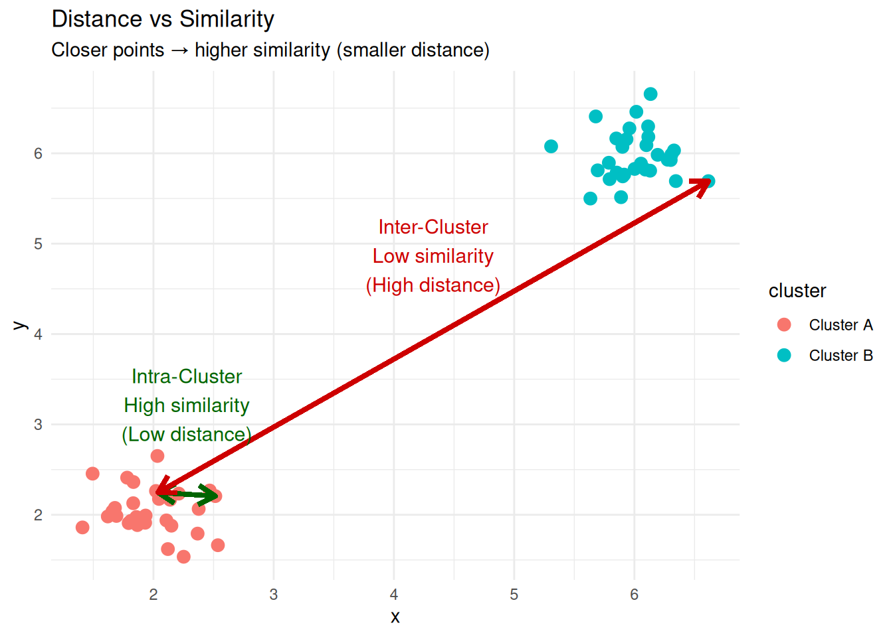
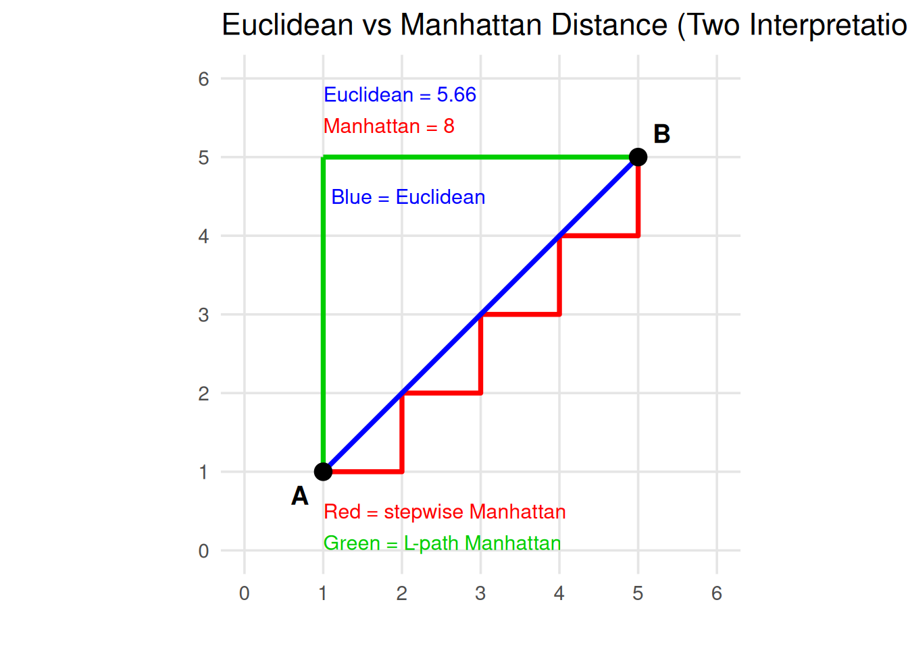
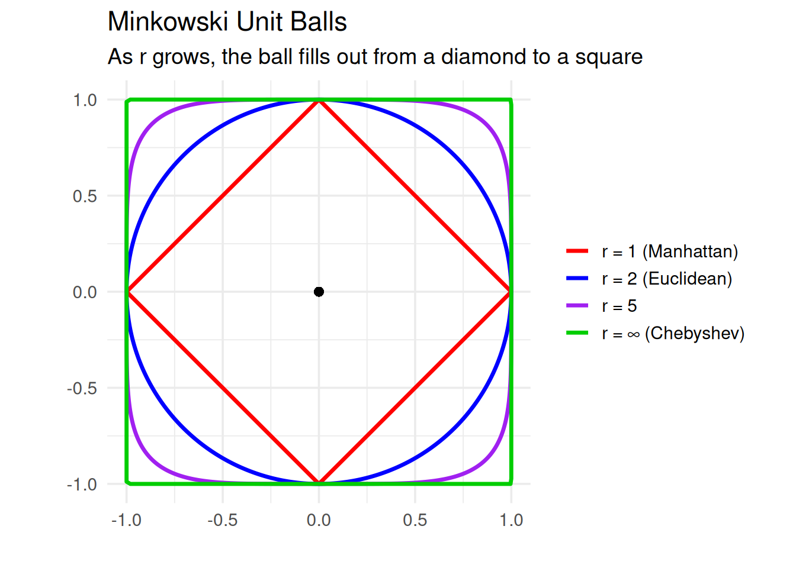
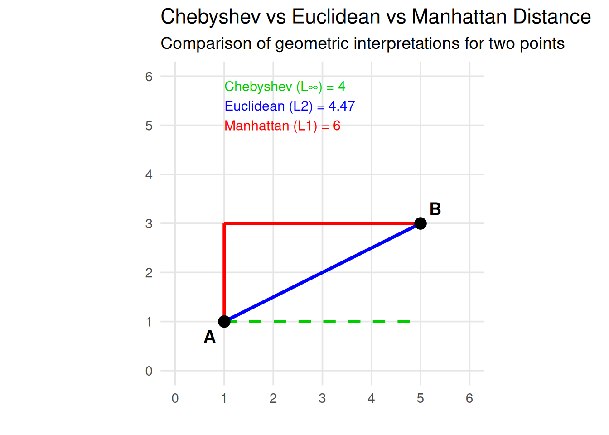
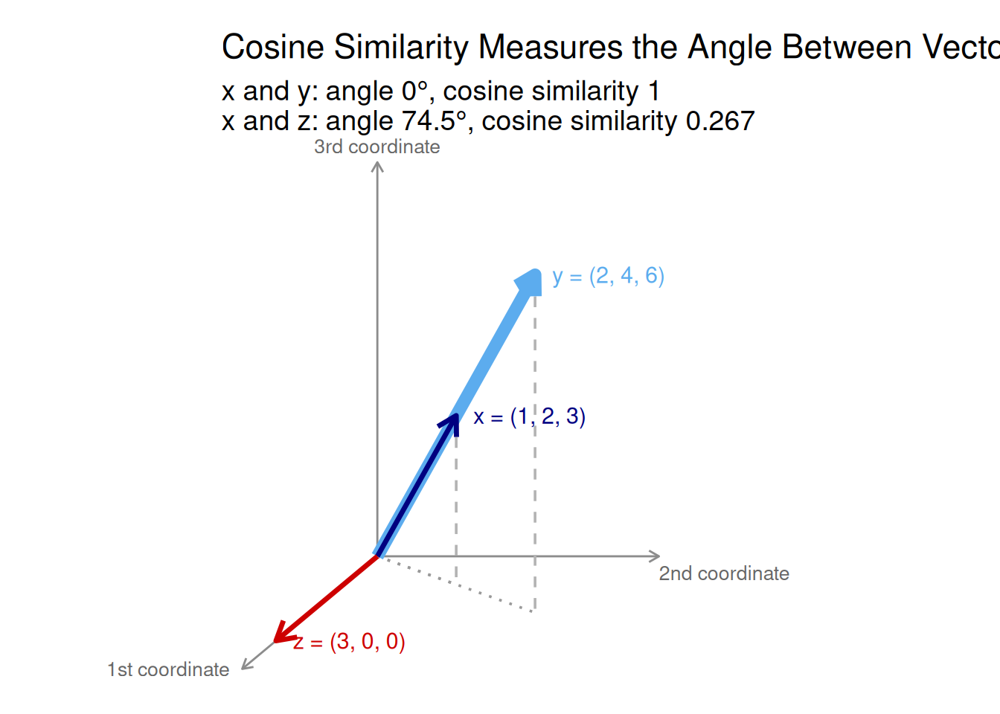
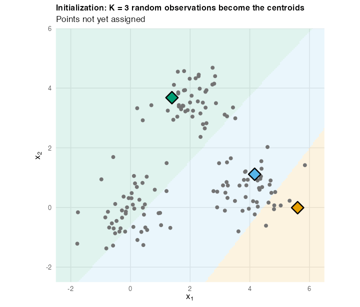
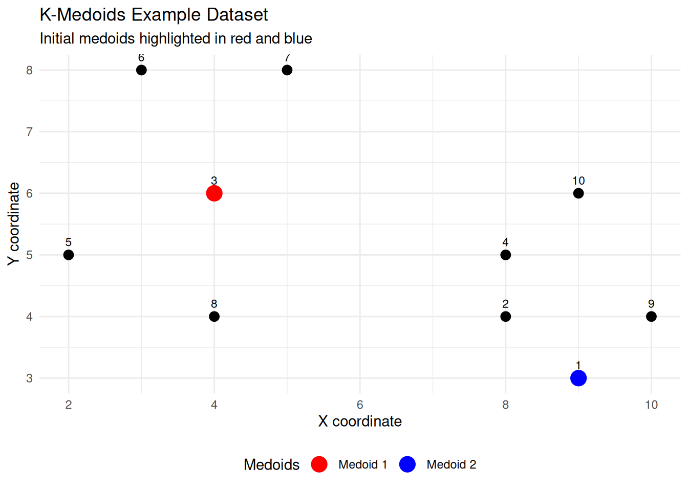

10 Clustering
Cluster analysis, or Clustering, is a technique used to find groups of objects such that the objects within the same group are similar (or closely related) to one another, while the objects from different groups are dissimilar (or unrelated).
10.1 Applications of Clustering
Clustering techniques are widely used across multiple disciplines to discover patterns, structure data, and support decision-making. Below are some common and illustrative applications.
Customer Segmentation
In marketing and business analytics, clustering helps identify groups of customers with similar behaviors, preferences, or purchasing habits. This segmentation allows companies to optimize advertising strategies, personalize product offerings, and design campaigns for specific focus groups.
Example: Grouping supermarket customers based on purchase frequency, product categories, and spending level.
Web Visitor Segmentation
Web analytics platforms use clustering to classify website visitors according to their browsing patterns, time spent on pages, or interaction behaviors. This segmentation supports personalized content delivery and improved user experience.
Example: Optimizing web navigation or recommendations for distinct user segments such as new visitors vs. returning users.
Data Aggregation and Reduction
Clustering can be used to represent large datasets by a smaller set of representative elements (centroids or medoids).
This reduces computational complexity and facilitates data visualization.
Example:
Reducing the color palette of an image to k representative colors using algorithms like k-means.
Text Collection Organization
In natural language processing (NLP), clustering is applied to group similar documents or texts into topics or themes.
It is particularly useful when the number or nature of topics is unknown in advance.
Example:
Grouping news articles, research abstracts, or emails into topic clusters.
Biology and Taxonomy
In biological sciences, clustering supports the classification of living organisms based on genetic, morphological, or behavioral similarities.
It forms the basis for hierarchical structures such as kingdom, phylum, class, order, family, genus, and species.
Example:
Clustering DNA sequences to identify genetic relationships among species.
Information Retrieval
In computer science and library systems, clustering helps organize large document collections to improve search and retrieval efficiency. By grouping related documents, search engines can return more contextually relevant results.
Example:
Document clustering for semantic search or grouping research papers by field of study.
10.2 Distance and Similarity in Clustering
The notion of distance or similarity lies at the heart of clustering. Since clustering aims to group similar observations together, we must have a way to measure how close or far two observations are from each other in the feature space. These measures quantify the degree of resemblance (similarity) or difference (dissimilarity) between data points.
The main goal is to partition a set of data points into clusters where intra-cluster distances (distances between points within the same cluster) are minimized, and inter-cluster distances (distances between points from different clusters) are maximized.
Thus, the main goal of clustering can be rewritten as:
The main goal is to partition a set of data points into clusters where intra-cluster similarities (similarities between points within the same cluster) are maximized, and inter-cluster similarities (similarities between points from different clusters) are minimized.
To avoid confusion, remember that distance and similarity are inverse concepts: when two objects are close (small distance), they are considered similar (high similarity).
The table below summarizes their relationship and how each measure behaves in clustering.
| Concept | Meaning | High Value Indicates | Low Value Indicates | Goal in Clustering |
|---|---|---|---|---|
| Distance | A measure of dissimilarity between two objects | Objects are far apart (dissimilar) | Objects are close together (similar) | Minimize intra-cluster distances and maximize inter-cluster distances |
| Similarity | A measure of closeness or resemblance between two objects | Objects are close together (similar) | Objects are far apart (dissimilar) | Maximize intra-cluster similarities and minimize inter-cluster similarities |
A distance metric \(d(\mathbf{x}, \mathbf{y})\) measures the dissimilarity between two points \(\mathbf{x}=(x_1, x_2, \ldots, x_p)\) and \(\mathbf{y} = (y_1, y_2, \ldots, y_p)\). Formally, a function \(d: X \times X \rightarrow \mathbb{R}\) is a metric if it satisfies: \[ \begin{aligned} 1.\;& d(\mathbf{x}, \mathbf{y}) \ge 0 && \text{(non-negativity)} \\ 2.\;& d(\mathbf{x}, \mathbf{y}) = 0 \iff \mathbf{x} = \mathbf{y} && \text{(identity)} \\ 3.\;& d(\mathbf{x}, \mathbf{y}) = d(\mathbf{y}, \mathbf{x}) && \text{(symmetry)} \\ 4.\;& d(\mathbf{x}, \mathbf{y}) \le d(\mathbf{x}, \mathbf{z}) + d(\mathbf{z}, \mathbf{y}) && \text{(triangle inequality)} \end{aligned} \]
A similarity measure \(s(\mathbf{x}, \mathbf{y})\) expresses how close or related two points are.
It usually satisfies: \[
\begin{aligned}
1.\;& s(\mathbf{x}, \mathbf{y}) \in [0, 1] && \text{(boundedness)} \\
2.\;& s(\mathbf{x}, \mathbf{y}) = s(\mathbf{y}, \mathbf{x}) && \text{(symmetry)} \\
3.\;& s(\mathbf{x}, \mathbf{x}) = 1 && \text{(maximum self-similarity)}
\end{aligned}
\] Some measures of resemblance, such as cosine similarity and correlation (introduced below), take values in \([-1, 1]\) instead, and are negative for vectors that point in opposite directions. The linear transformation \((1 + s)/2\) maps them to \([0, 1]\), after which they are similarities in the above sense.
A simple transformation links both concepts: \[ s(\mathbf{x}, \mathbf{y}) = \frac{1}{1 + d(\mathbf{x}, \mathbf{y})}, \quad \text{where } s(\mathbf{x}, \mathbf{y}) \in (0, 1]. \]
10.2.1 Common Distance Metrics
Different clustering algorithms may behave very differently depending on the metric used.
Below are the most widely used distance measures.
10.2.1.1 Euclidean Distance
The most common metric, representing the straight-line distance between two points in \(\mathbb{R}^p\): \[ d_E(\mathbf{x}, \mathbf{y}) = \sqrt{\sum_{i=1}^{p} (x_i - y_i)^2} \]
Note
Euclidean distance is sensitive to scale; therefore, variables should usually be standardized before applying it.
10.2.1.2 Manhattan (or City-Block) Distance
This distance sums the absolute differences across all coordinates: \[ d_M(\mathbf{x}, \mathbf{y}) = \sum_{i=1}^{p} |x_i - y_i| \]
Note
The Manhattan distance is more robust to outliers and suitable when features represent grid-like or discrete steps.

10.2.1.3 Minkowski Distance
A generalization of Euclidean and Manhattan distances, controlled by a parameter \(r\): \[ d_r(\mathbf{x}, \mathbf{y}) = \left( \sum_{i=1}^{p} |x_i - y_i|^r \right)^{1/r} \]
When \(r = 1\), it becomes Manhattan distance.
When \(r = 2\), it becomes Euclidean distance.
Larger values of \(r\) emphasize large coordinate differences.

Each curve is the set of points at Minkowski distance \(1\) from the origin. For \(r = 1\) it is a diamond, for \(r = 2\) a circle, and as \(r \to \infty\) it approaches the square of the Chebyshev distance below. The shortest path between two points is a straight line for every \(r > 1\); what changes with \(r\) is the length assigned to it.
10.2.1.4 Chebyshev Distance
Also known as the \(L_\infty\) norm, this distance takes the largest coordinate difference: \[ d_C(\mathbf{x}, \mathbf{y}) = \max_i |x_i - y_i| \] It measures how far apart two points are along the dimension where they differ most.

10.2.1.5 Mahalanobis Distance
A scale-invariant distance that accounts for correlations between variables: \[ d_{Mah}(\mathbf{x}, \mathbf{y}) = \sqrt{(\mathbf{x} - \mathbf{y})^{\top} \boldsymbol{\Sigma}^{-1} (\mathbf{x} - \mathbf{y})} \] where \(\boldsymbol{\Sigma}\) is the covariance matrix of the data. Two points with the same Mahalanobis distance from the mean are equally likely under a multivariate normal model, regardless of the variable scales or correlations.
Tip
Choosing an Appropriate Metric
The choice of metric depends on the data characteristics and the clustering goal:
- Use Euclidean when features are continuous and scaled.
- Use Manhattan for grid-like or sparse data.
- Use Mahalanobis when features are correlated.
- Use Chebyshev for problems sensitive to maximum deviations.
- Use Minkowski for flexible control between Manhattan and Euclidean.
10.2.1.6 Cosine and Correlation Distance
For data where direction or orientation matters more than magnitude — such as text represented by TF-IDF vectors or normalized embeddings — Euclidean distance is not ideal. Instead, we use cosine similarity or correlation distance.
The cosine similarity between two vectors \(\mathbf{x}\) and \(\mathbf{y}\) is defined as \[ s_{\text{cosine}}(\mathbf{x}, \mathbf{y}) = \frac{\mathbf{x} \cdot \mathbf{y}}{\|\mathbf{x}\| \, \|\mathbf{y}\|} \] where \(\mathbf{x} \cdot \mathbf{y}\) is the dot product of the two vectors, and \(\|\mathbf{x}\|\) and \(\|\mathbf{y}\|\) are their Euclidean norms.
This similarity measures the cosine of the angle between the two vectors in a multidimensional space.
A value of 1 means the vectors point in the same direction (perfectly similar).
A value of 0 means the vectors are orthogonal (no similarity).
A value of –1 means they point in opposite directions (perfectly dissimilar).
Because it can be negative, cosine similarity becomes a similarity in \([0, 1]\) only after rescaling: \((1 + s_{\text{cosine}})/2\) equals \(1\) for the same direction, \(0.5\) for orthogonal vectors and \(0\) for opposite directions. For non-negative data, such as word counts, the cosine is already in \([0, 1]\).
The corresponding cosine distance is: \[ d_{\text{cosine}}(\mathbf{x}, \mathbf{y}) = 1 - s_{\text{cosine}}(\mathbf{x}, \mathbf{y}) \]
The figure below draws the three vectors as arrows from the origin.

The figure shows why cosine similarity ignores magnitude. Because \(\mathbf{y} = 2\mathbf{x}\), it is the same arrow twice as long. The angle between them is \(0^\circ\), so their cosine distance is \(0\), although their Euclidean distance is \(\sqrt{14} \approx 3.74\). The vector \(\mathbf{z}\) points along the first coordinate only, at an angle of about \(74.5^\circ\) from \(\mathbf{x}\), so its cosine distance from \(\mathbf{x}\) is large (\(0.733\)). Its Euclidean distance, \(\sqrt{17} \approx 4.12\), is barely larger than that between \(\mathbf{x}\) and \(\mathbf{y}\). The two measures answer different questions: how far apart are the points? versus do they point the same way?
Tip
Cosine-based metrics are particularly useful for directional data, where the pattern or orientation of features matters more than their magnitude — for example, in text mining (TF-IDF vectors), recommendation systems, or image feature embeddings.
The correlation distance applies the same idea after centring each observation on its own mean: \(d_{\text{cor}}(\mathbf{x}, \mathbf{y}) = 1 - r(\mathbf{x}, \mathbf{y})\), where \(r\) is the Pearson correlation between the two vectors. Like the cosine, \(r\) lies in \([-1, 1]\), and \((1 + r)/2\) turns it into a similarity in \([0, 1]\). The correlation distance is available as factoextra::get_dist(method = "pearson") (also "spearman" and "kendall").
10.2.2 Distances for Binary Data
When the data are binary (0 or 1), such as presence/absence, success/failure, or yes/no attributes, specialized similarity and distance measures are used.
Let \(o_1, o_2 \in \{0,1\}^d\) be two binary observations described by \(d\) attributes.
We define: \[ \begin{aligned} f_{11} &= \text{number of attributes where } o_1 = 1 \text{ and } o_2 = 1, \\ f_{00} &= \text{number of attributes where } o_1 = 0 \text{ and } o_2 = 0, \\ f_{10} &= \text{number of attributes where } o_1 = 1 \text{ and } o_2 = 0, \\ f_{01} &= \text{number of attributes where } o_1 = 0 \text{ and } o_2 = 1. \end{aligned} \]
10.2.2.1 Simple Matching Coefficient (Similarity)
\[ s_{SMC}(o_1, o_2) = \frac{f_{11} + f_{00}}{f_{11} + f_{00} + f_{10} + f_{01}} = \frac{f_{11} + f_{00}}{d} \]
This coefficient measures the proportion of attributes where the two observations match — whether both are 1s or both are 0s.
10.2.2.2 Simple Matching Distance
\[ d_{SMC}(o_1, o_2) = 1 - s_{SMC}(o_1, o_2) = \frac{f_{01} + f_{10}}{d} \] This represents the proportion of mismatches between two binary objects.
Note
If two binary vectors are identical, \(s_{SMC} = 1\) and \(d_{SMC} = 0\).
If they are completely opposite, \(s_{SMC} = 0\) and \(d_{SMC} = 1\).
The SMC treats \(0\)s and \(1\)s symmetrically, so it is best used when both states are equally meaningful.
10.2.3 Distances for Categorical Data
When data contain categorical or mixed-type variables, standard numeric distances (like Euclidean) are not suitable.
Instead, we use measures that handle qualitative comparisons directly.
Let \(\mathbf{x} = (x_1, \ldots, x_p)\) and \(\mathbf{y} = (y_1, \ldots, y_p)\) be two observations described by \(p\) categorical or mixed-type attributes.
10.2.3.1 Hamming Distance
The Hamming distance counts the number of mismatches between two vectors: \[ \text{d}_{Hamming}(\mathbf{x}, \mathbf{y}) = \sum_{i=1}^{p} \delta(x_i, y_i) \] where \[ \delta(x_i, y_i) = \begin{cases} 0, & \text{if } x_i = y_i \\ 1, & \text{if } x_i \neq y_i \end{cases} \] It measures how many positions differ between two categorical strings or binary vectors.
10.2.3.2 Gower Distance
The Gower distance (Gower 1971) allows comparing mixed-type data (numerical, categorical, binomial).
For two observations \(i\) and \(j\), and each variable \(k\), Gower’s method computes a partial similarity score \(s_{ijk}\) as follows:
Numeric variables (continuous or discrete): \[ s_{ijk} = 1 - \frac{|x_{ik} - x_{jk}|}{R_k} \] where \(R_k\) is the range of variable \(k\).
Categorical (or binary) variables: \[ s_{ijk} = \begin{cases} 1 & \quad \text{if} \quad x_{ik} = x_{jk}\\ 0 & \quad \text{if} \quad x_{ik} \neq x_{jk} \end{cases} \] Then, the overall similarity between \(i\) and \(j\) is \[ S_{ij} = \frac{\sum_k s_{ijk} \delta_{ijk}}{\sum_k \delta_{ijk}} \] where \(\delta_{ijk} = 1\) if variable \(k\) is valid for both \(i\) and \(j\) (i.e, non-missing), else \(0\).
Finally, to convert similarity to a distance, one often uses \[ D_{ij} = 1 - S_{ij} \]
As an example, consider the following table which shows information about a number of individuals (identified by “Subject ID”) with four attributes:
- Age – a continuous numeric variable
- Handedness – a binary variable, whether the individual is left- or right-handed.
- Eye colour - a categorical variable
- Knows Python – a binary variable. Strictly, it is asymmetric: two people who know Python may have a similar education, but both of them not knowing Python does not imply they have similar backgrounds. For the hand calculation below we treat it as an ordinary (symmetric) binary variable, and we show the asymmetric version in R afterwards.
| Subject ID | Age | Handedness | Eye Colour | Knows Python |
|---|---|---|---|---|
| 001 | 28 | Right | Blue | Yes |
| 002 | 34 | Left | Blue | No |
| 003 | 22 | Right | Green | Yes |
| 004 | 45 | Right | Hazel | No |
| 005 | 30 | Left | Brown | Yes |
Let us look at individuals 001 and 002, and calculate the score for each variable in turn:
Age: \[ s_{\textrm{age}} = 1 - \frac{|28 - 34|}{23} = 0.74 \] where the range \(R_k = 23\) is the range of ages in the sample, which has a minimum of \(22\) and a maximum of \(45\).
Handedness:
Since the individuals have different handedness, \(s_{\text{handedness}} = 0\).
Eye colour: They have the same eyes, \(s_{\text{eyes}} = 1\).
Knows Python:
Individuals 001 knows python whereas 002 does not; so, \(s_{\text{python}} = 0\).
We have no missing data, so all the \(\delta_{ijk} = 1\). The overall similarity score between 001 and 002 is therefore \[ S = \frac{0.74 \times 1 + 0 \times 1 + 1 \times 1 + 0 \times 1}{1 + 1 + 1 + 1} = \frac{1.74}{4} = 0.435 \] So, the Gower distance between these two individuals is \[ D = 1 - 0.435 = 0.565 \]
Repeating the calculation for all pairs of individuals, we obtain the distance matrix, which can be used for clustering them into groups.
For calculating Gower distance in R, we can use daisy() from the package cluster. Always convert character columns to factors before using this function.
The first matrix reproduces the hand calculation: \(D_{001,002} = 0.565\). The individuals who are most similar are 001 and 003 \((D = 0.315)\) and the most different are 004 and 005 \((D = 0.913)\).
In the asymmetric version, only the pair 002–004 changes, because they are the only pair who both answer No. That variable is then dropped from their comparison, and their distance rises from \(0.620\) to \(0.826\).
10.2.4 Visualizing distance matrices
Datasets usually contain many observations (more than just two points).
When we compute pairwise distances between all observations, we obtain a distance matrix — a square table where each cell represents the dissimilarity between two observations.
Mathematically, if a dataset has \(n\) observations, the distance matrix has \(n \times n\) entries: \[ D_{ij} = d(\mathbf{x}_i, \mathbf{x}_j) \] where \(D_{ij}\) is the distance between observation \(i\) and \(j\).
Because this matrix contains all pairwise comparisons, it provides a complete picture of how observations relate to one another.
However, as the number of observations grows, the matrix quickly becomes difficult to interpret numerically — it is just a sea of numbers.
To extract insights, we often visualize the distance matrix as a heatmap or similarity map.
Visualizing distance matrices helps us:
Detect structure – clusters appear as blocks or dark/light patches.
Spot outliers – points that are dissimilar from everyone else.
Compare metrics – see how distance measures produce different patterns.
Build intuition – for what closeness or difference means in multidimensional space.
The color level is proportional to the value of the dissimilarity between observations: red for small and blue for large dissimilarities (here, pure red when \(\text{dist}(\mathbf{x}_i, \mathbf{x}_j) = 0\)). By default, fviz_dist() reorders the observations (order = TRUE) so that similar objects are displayed next to each other.
In this example, subjects 001 and 003 are the most similar pair (same handedness, both know Python, close in age). Subject 004 (oldest, hazel eyes, does not know Python) stands out as the most dissimilar from the others.
1. Create two 3-dimensional points and calculate the distance
Let \(A = (1, 3, 5)\) and \(B = (4, 9, 6)\).
Compute manually and in R the following distances between \(A\) and \(B\):
Euclidean
Manhattan
Minkowski with \(r = 3\)
Chebyshev
2. Explore sensitivity to scale
Multiply the second coordinate of both points by 10 and recompute all distances. How does this change the results?
Two species are described by four binary characteristics:
| Feature | Species A | Species B |
|---|---|---|
| Has fins | 1 | 1 |
| Lays eggs | 1 | 0 |
| Has scales | 1 | 1 |
| Warm-blooded | 0 | 1 |
Compute manually:
- \(f_{11}, f_{00}, f_{10}, f_{01}\)
- The Simple Matching Coefficient (SMC)
- The Simple Matching Distance (SMD)
Verify your results using R.
Which pair of features contributes to dissimilarity?
Two students rate three projects as “Good”, “Average”, or “Poor”:
| Project | Student 1 | Student 2 |
|---|---|---|
| A | Good | Good |
| B | Poor | Average |
| C | Good | Poor |
Compute the Hamming distance (number of mismatches).
Hint: Store each student’s ratings as a character vector and compare them element by element with !=.
We want to analyse the flower dataset which is available in the package cluster.
Based on the following information, a) choose an appropriate distance and compute the distance matrix, and b) visualize the distance matrix.
Hint: The data mix numeric, nominal, ordinal and binary variables, so look at the type argument of daisy().
library(cluster)
data(flower)
head(flower, 3) V1 V2 V3 V4 V5 V6 V7 V8
1 0 1 1 4 3 15 25 15
2 1 0 0 2 1 3 150 50
3 0 1 0 3 3 1 150 50#Data structure
str(flower)'data.frame': 18 obs. of 8 variables:
$ V1: Factor w/ 2 levels "0","1": 1 2 1 1 1 1 1 1 2 2 ...
$ V2: Factor w/ 2 levels "0","1": 2 1 2 1 2 2 1 1 2 2 ...
$ V3: Factor w/ 2 levels "0","1": 2 1 1 2 1 1 1 2 1 1 ...
$ V4: Factor w/ 5 levels "1","2","3","4",..: 4 2 3 4 5 4 4 2 3 5 ...
$ V5: Ord.factor w/ 3 levels "1"<"2"<"3": 3 1 3 2 2 3 3 2 1 2 ...
$ V6: Ord.factor w/ 18 levels "1"<"2"<"3"<"4"<..: 15 3 1 16 2 12 13 7 4 14 ...
$ V7: num 25 150 150 125 20 50 40 100 25 100 ...
$ V8: num 15 50 50 50 15 40 20 15 15 60 ...10.3 Pre-Clustering Tests: Assessing Clustering Tendency
The previous section gave us ways to measure how far apart two observations are. Before we use those distances to build groups, we should ask a prior question: are there any groups to find? Assessing this is called assessing the clustering tendency of the data, or the feasibility of the cluster analysis.
Important
A big issue in cluster analysis is that clustering methods will return clusters even if the data do not contain any. If you blindly apply a clustering method to a data set, it will divide the data into groups, because that is what it is designed to do.
Two diagnostics are routinely used before clustering:
- the Hopkins statistic, a statistical test of whether the data could have come from a uniform (structureless) distribution;
- the Visual Assessment of cluster Tendency (VAT), which reorders the distance matrix and looks for blocks along its diagonal.
Neither tells us which algorithm to use or how many clusters there are — those questions are taken up in Section 10.5. They tell us whether clustering is likely to find real structure at all.
10.3.1 The Data: Palmer Penguins
From here on, the running example of the chapter is the Palmer penguins data (Horst et al. 2020), from the package palmerpenguins (released under the CC0 licence). They contain measurements of \(344\) adult penguins of three species — Adelie, Chinstrap and Gentoo — collected by Dr. Kristen Gorman at Palmer Station, Antarctica (Gorman et al. 2014):
| Variable | Type | Description | Unit |
|---|---|---|---|
species |
factor | Adelie, Chinstrap or Gentoo | — |
island |
factor | Biscoe, Dream or Torgersen | — |
bill_length_mm |
numeric | Bill (culmen) length | mm |
bill_depth_mm |
numeric | Bill (culmen) depth | mm |
flipper_length_mm |
numeric | Flipper length | mm |
body_mass_g |
numeric | Body mass | g |
sex |
factor | female or male | — |
year |
integer | Year of the study (2007–2009) | — |
The data suit a clustering chapter well:
- we can cluster the four body measurements without the species, and then use
speciesas an external reference to see how well the clusters recover it; - one species (Gentoo) is clearly separated from the others, while Adelie and Chinstrap overlap, so the “right” number of clusters is genuinely debatable;
- body mass is measured in grams and the other variables in millimetres, so scaling matters;
islandandsexare categorical, for mixed-type distances.
Eleven penguins have at least one missing value (two have no measurements at all, nine more have no recorded sex). Clustering functions such as kmeans() and dist() do not accept missing values, so we drop these rows and work with \(333\) penguins. For a better treatment of missing data, see the Missing Values chapter.
Note
Since version 4.5.0, R also ships a penguins data set in the base package datasets, with shorter column names (bill_len, body_mass, …). We always write palmerpenguins::penguins to make clear which one we use.
10.3.2 Two Data Sets to Compare
To see what the diagnostics say when there is structure and when there is none, we compare the penguin measurements with a random data set of the same size, in which each variable is drawn uniformly between its observed minimum and maximum. Both are standardized, because both diagnostics depend on Euclidean distances.
10.3.3 The Hopkins Statistic
The Hopkins statistic (Hopkins and Skellam 1954) tests the spatial randomness of the data. It compares how close the real observations are to each other with how close random points are to the real observations.
Let \(D\) be a data set with \(n\) observations and \(d\) variables. The Hopkins statistic is calculated as follows:
- Sample \(m\) observations \(p_1, \ldots, p_m\) from \(D\) without replacement (typically \(m \approx n/10\)). For each \(p_i\), find its nearest neighbor among the other observations of \(D\), and denote the distance by \(x_i\).
- Generate \(m\) points \(q_1, \ldots, q_m\) uniformly at random within the range of each variable of \(D\). For each \(q_i\), find its nearest neighbor in \(D\), and denote the distance by \(y_i\).
- Compute \[ H = \frac{\sum_{i=1}^m y_i^{\,d}}{\sum_{i=1}^m x_i^{\,d} + \sum_{i=1}^m y_i^{\,d}} \]
Raising the distances to the power \(d\) turns them into something proportional to the volume of a \(d\)-dimensional ball. With that correction, \(H\) follows a \(\text{Beta}(m, m)\) distribution when the data are uniform (Wright 2022). The hypotheses are:
- null hypothesis: the data set \(D\) is uniformly distributed (no meaningful clusters);
- alternative hypothesis: the data set \(D\) is not uniformly distributed (it contains structure).
The interpretation follows from the formula:
- \(H \approx 0.5\): real observations are no closer to each other than random points are to them, so there is no evidence of clusters;
- \(H\) close to 1: real observations have much nearer neighbors (\(x_i\) small) than random points do (\(y_i\) large), so the data are clustered;
- \(H\) close to \(0\): the observations are more evenly spaced than random, as on a regular grid.
Warning
Older software does not always follow this definition. The clustertend package and early versions of factoextra reported \(1 - H\), so that values near \(0\) indicated clustering. factoextra up to version 1.0.7 reports \(H\), but does not raise the distances to the power \(d\): its values are less extreme and do not follow the \(\text{Beta}(m, m)\) null distribution (for the penguins below, \(0.80\) instead of \(0.995\)). Always check which convention a function uses before comparing results across sources (Wright 2022).
The function hopkins::hopkins() computes the statistic and hopkins::hopkins.pval() its (two-sided) \(p\)-value under the \(\text{Beta}(m, m)\) null. The simplified format is
hopkins(X, m = ceiling(nrow(X) / 10))
hopkins.pval(H, m)where:
X: a data frame or matrixm: the number of observations sampled from the data (and of random points generated)H: the value returned byhopkins()
Example:
The penguin measurements are highly clusterable: \(H = 0.995\), and the null hypothesis of uniformity is rejected (\(p < 0.001\)). The random data give \(H = 0.51\) with \(p = 0.87\), so there is no evidence of clusters in them, as expected.
Warning
The Hopkins statistic tests uniformity, not the presence of clusters as such. Data with no groups at all, but with correlated or skewed variables, are not uniform either, and they also give \(H\) close to \(1\). A high \(H\) is necessary for clustering to make sense, but not sufficient: always look at the VAT image below, and later at the silhouette, before concluding that the groups are real.
Tip
The Hopkins statistic is itself random, because it depends on the sampled observations and the generated points. Fix the seed for reproducibility, and for a borderline value, repeat the computation with several seeds before drawing a conclusion.
10.3.4 Visual Assessment of Cluster Tendency (VAT)
The VAT algorithm (Bezdek and Hathaway 2002) works as follows:
- Compute the dissimilarity matrix (DM) between the observations, using the Euclidean distance.
- Reorder the DM so that similar objects are close to one another. This creates an ordered dissimilarity matrix (ODM).
- Display the ODM as an ordered dissimilarity image (ODI), which is the visual output of VAT.
This is exactly the distance-matrix heat map of the previous section: dist() computes the dissimilarity matrix and factoextra::fviz_dist(), which reorders the observations by default, displays it.
Example: we use the same two data sets as for the Hopkins statistic.
In these plots, red shows high similarity (small dissimilarity) and blue shows low similarity (large dissimilarity).
A clustering tendency shows up as square red blocks along the diagonal: groups of observations that are close to each other and far from the rest. The penguins image has a clear block structure. One large block, bounded by blue on every side, contains the Gentoo penguins: they are close to each other and far from everybody else. The remaining birds form red blocks that are also fairly red between each other, because Adelie and Chinstrap penguins have similar body measurements. The random data show no such pattern. The image confirms the Hopkins result and also hints at how many clusters are present, a question taken up in Section 10.5.
10.4 Partition-Based Clustering: \(k\)-Means and \(k\)-Medoids
Partitioning clustering methods classify the observations of a dataset into multiple groups based on their similarity. The algorithms require the analyst to specify the number of clusters to be generated.
The commonly used partitioning methods include:
- \(K\)-means clustering (MacQueen 1967), in which each cluster is represented by the center (mean) of the data points belonging to the cluster. The \(K\)-means method is sensitive to anomalous data points and outliers.
- \(K\)-medoids clustering or PAM (Partitioning Around Medoids) (Kaufman and Rousseeuw 1990), in which each cluster is represented by one of the objects in the cluster. PAM is less sensitive to outliers than \(K\)-means.
- CLARA (Clustering Large Applications) algorithm, which is an extension to PAM adapted for large data sets.
10.4.1 \(K\)-Means Clustering
K-Means aims to partition \(n\) observations into \(K\) clusters such that each observation belongs to the cluster with the nearest centroid (mean of points).
Each cluster is represented by its centroid, which may not be an actual data point.
10.4.1.1 \(K\)-means basic ideas
The basic idea behind \(K\)-means clustering consists of defining clusters so that the total intra-cluster variation (known as total within-cluster variation) is minimized.
The within-cluster variation of cluster \(C_k\) is the sum of squared Euclidean distances between its points and its centroid: \[ W(C_k) = \sum_{\mathbf{x}_i \in C_k} \|\mathbf{x}_i - \boldsymbol{\mu}_k\|^2 \] where \(\mathbf{x}_i\) denotes a data point belonging to the cluster \(C_k\) and \(\boldsymbol{\mu}_k\) is the mean of the points assigned to \(C_k\).
Each observation \(\mathbf{x}_i\) is assigned to a cluster so that the sum of squared distances of the observations to their assigned centroids is minimum.
We define the total within-cluster variation as follows: \[ \text{tot.withinss} = \sum_{k=1}^K W(C_k) = \sum_{k=1}^K \sum_{\mathbf{x}_i \in C_k} \|\mathbf{x}_i - \boldsymbol{\mu}_k\|^2 \]
The total within-cluster sum of squares measures the compactness (i.e. goodness) of the clustering and we want it to be as small as possible.
10.4.1.2 \(K\)-means Algorithm
Given a dataset \(\mathbf{X}= \{\mathbf{x}_1, \mathbf{x}_2, \ldots, \mathbf{x}_n\}\):
- Choose the number of clusters \(K\).
- Initialize \(K\) centroids randomly (for example, \(K\) randomly chosen observations).
- Assign step: Assign each observation \(\mathbf{x}_i\) to the nearest centroid, using the Euclidean distance: \[ c_i = \arg\min_k \|\mathbf{x}_i - \boldsymbol{\mu}_k\|^2 \] where \(\boldsymbol{\mu}_k\) is the \(k\)-th centroid.
- Update step: Recalculate each centroid as the mean of the \(n_k\) points in its cluster: \[ \boldsymbol{\mu}_k = \frac{1}{n_k} \sum_{\mathbf{x}_i \in C_k} \mathbf{x}_i \]
- Repeat steps 3–4 until the assignments stop changing (convergence) or the maximum number of iterations is reached.
These steps are Lloyd’s algorithm (Lloyd 1982), the simplest way to minimize tot.withinss. R’s kmeans() uses by default the Hartigan–Wong algorithm (Hartigan and Wong 1979), which minimizes the same criterion but also moves single points between clusters whenever that lowers it, and usually reaches a better solution. kmeans(algorithm = "Lloyd") runs the version above.
For better understanding, see this video

The animation runs the five steps above on three groups of \(50\) simulated points.
- Initialization. The three random starting observations happen to be poorly placed: two of them lie in the same group (on the right), and no centroid starts in the bottom-left group.
- Iterations. At each assign step, every point takes the color of its nearest centroid. At each update step, every centroid moves to the mean of its points. Over the iterations, the blue centroid is pulled from the right-hand group to the bottom-left one.
- Convergence. After \(6\) iterations no point changes cluster, and each centroid sits in the middle of one group.
The subtitle tracks the total within-cluster sum of squares: from \(933.8\) after the first assignment down to \(130.8\) at convergence. It decreases at every step, assign and update alike, because each step can only lower it. This is why the algorithm always converges — but only to a local minimum, which depends on the starting centroids. A different random start can end with one centroid covering two groups; this is why kmeans() should be run with several starts (nstart), as discussed below.
10.4.1.3 Properties and Limitations of \(K\)-Means
Although \(K\)-means is one of the most popular clustering algorithms, its effectiveness depends on the structure and scale of the data. Understanding its limitations helps decide when to use it — and when to choose a more robust alternative like \(K\)-Medoids.
10.4.1.3.1 Data Type and Cluster Shape
\(K\)-Means works best when:
All variables are numeric and measured on a comparable scale.
The clusters are spherical (or roughly circular in 2D).
Each cluster has similar variance and density.
When clusters are elongated, overlapping, or non-spherical, \(K\)-Means may assign points incorrectly because it relies on Euclidean distance.
10.4.1.3.2 Sensitivity to Scale
In clustering, the distance between data points determines how groups are formed.
If variables are measured on very different scales (for example, income in euros and age in years), the variable with the largest numerical range will dominate the distance calculation. As a result, the algorithm may ignore other variables, even if they carry meaningful structure. To correct this imbalance, we use scaling transformations, which adjust the magnitude or spread of each variable before computing distances.
10.4.1.3.3 Normalization (Min–Max Scaling)
Normalization rescales all variables to a fixed range, usually between \(0\) and \(1\): \[ x' = \frac{x - \min(x)}{\max(x) - \min(x)} \] This transformation preserves the shape of the distribution but ensures all features contribute equally in magnitude to the distance measure. It is particularly effective when all features have bounded ranges or similar distributions.
10.4.1.3.4 Standardization (Z-score Scaling)
Standardization rescales variables so they have mean 0 and standard deviation 1: \[ x' = \frac{x - \bar{x}}{s_x} \] where \(\bar{x}\) is the mean and \(s_x\) is the standard deviation.
This approach centers the data and adjusts for variance, which helps when features have different dispersions or units of measurement. Standardization is preferred when features are expected to follow roughly Gaussian distributions, or when outliers might distort min–max scaling.
Important
Why It Matters for \(k\)-Means and Similar Algorithms
\(K\)-means relies on Euclidean distance, which is sensitive to scale. Without scaling, one feature can dominate, producing distorted clusters.
After scaling or standardization, all variables contribute more fairly, and the clusters tend to reflect combined variation across features.
Scaling can change the cluster boundaries, but it does not change the underlying data relationships — it only ensures that distances are comparable.
We will show the effect of normalization and standardization on the data.
Now, we apply \(K\)-means on the raw dataset.
Now, we normalize the dataset and apply \(k\)-means.
Finally, we standardize the dataset before applying \(k\)-means.
10.4.1.4 Implementation of \(K\)-means in R
The standard R function for \(K\)-means clustering is stats::kmeans(), whose simplified format is as follows:
kmeans(x, centers, iter.max = 10, nstart = 1)where:
x: numeric matrix, numeric data frame or a numeric vectorcenters: possible values are the number of clusters (\(k\)) or a set of initial (distinct) cluster centers. If a number, a random set of (distinct) rows in \(x\) is chosen as the initial centers.iter.max: the maximum number of iterations allowed. Default value is \(10\).nstart: the number of random starting partitions when centers is a number. Tryingnstart > 1is often recommended.
To create a graph of the clusters generated with the kmeans() function, we will use the factoextra package.
Computing \(K\)-means clustering
As \(K\)-means clustering algorithm starts with \(K\) randomly selected centroids, it is always recommended to use the set.seed() function in order to set a seed for R’s random number generator, so that the results are reproducible.
The R code below performs \(K\)-means clustering with \(K = 4\):
set.seed(123)
km.res <- kmeans(df, centers = 4, nstart = 25)
Tip
Actually, \(K\)-means starts by randomly choosing \(K\) points as initial centroids. Depending on these starting points, the algorithm can converge to different local minima — meaning the results may vary across runs. So, nstart is the number of random initial sets of centroids to try and then, R will run the algorithm that many times and keep the best result (the one with the lowest total within-cluster sum of squares).
The default value of nstart in R is one. But, it is strongly recommended to compute \(K\)-means clustering with a large value of nstart such as \(25\) or \(50\), in order to have a more stable result.
The results of kmeans(), saved here in km.res, can be displayed with the function print():
print(km.res)The printed output displays:
- the cluster means or centers, that is a matrix which rows are cluster number and columns are variables.
- the clustering vector which is a vector of integers (from 1 to \(K\)) indicating the cluster to which each point is allocated.
Note
It is possible to compute the mean of each variable in the dataset by clusters using the original dataset.
aggregate(df, by = list(cluster=km.res$cluster), mean)
Note
If you want to add the clusters to the original data, use the following R code
cbind(df, cluster = km.res$cluster)The kmeans() function returns a list of components, including:
- cluster: a vector of integers (from \(1\) to \(k\)) indicating the cluster to which each point is allocated.
- centers: a matrix of cluster centers (cluster means)
- totss: the total sum of squares (TSS). It measures the total variance in the data (see Section 10.5.1 for the definitions of TSS, WSS and BSS).
- withinss: vector of within-cluster sum of squares, one component per cluster
- tot.withinss: total within-cluster sum of squares, i.e., \(\text{sum}(withinss)\)
- betweenss: the between-cluster sum of squares, i.e., totss - tot.withinss
- size: the number of observations in each cluster
These components can be accessed as follows:
# Cluster number for each of the observations
km.res$cluster
# Cluster size
km.res$size
# Cluster means
km.res$centersVisualizing \(K\)-means Clusters
It is a good idea to plot the cluster results. Plots help to judge the choice of the number of clusters and to compare two different cluster analyses.
The idea is to visualize the data in scatter plot with each data point colored according to its cluster assignment.
The problem is that the data usually contain more than 2 variables and the question is what variables to choose for the \(x\)-\(y\) scatter plot. A solution is to reduce the number of dimensions by applying a dimensionality reduction algorithm, such as principal component analysis (PCA).
In other words, if we have a multi-dimensional dataset, a solution is to perform PCA and to plot data points according to the first two principal components coordinates.
The function factoextra::fviz_cluster() can be used to easily visualize \(K\)-means clusters. It takes \(K\)-means results and the original data as arguments. In the resulting plot, observations are represented by points, using principal components if the number of variables is greater than \(2\). It is also possible to draw concentration ellipse around each cluster.
fviz_cluster(km.res, data = df,
palette = c("#2E9FDF", "#00AFBB", "#E7B800", "#FC4E07"), #Define colors
ellipse.type = "euclid", # Concentration ellipse
star.plot = TRUE, # Add segments from centroids to items
repel = TRUE, # Avoid label overplotting (slow)
ggtheme = theme_minimal()
)
Important
\(K\)-means clustering is a very simple and fast algorithm. It can efficiently deal with very large data sets.
Important
\(K\)-means has some weaknesses, including:
- It assumes prior knowledge of the data and requires the analyst to choose the appropriate number of clusters (\(k\)) in advance.
Solution: Compute \(K\)-means for a range of \(K\) values, for example by varying \(k\) between \(2\) and \(10\). Then choose the best \(k\) by comparing the clustering results obtained for different \(k\) values (Section 10.5.2).
- The final result is sensitive to the initial random selection of cluster centers. Why is this a problem? Because, for every different run of the algorithm on the same data set, you may choose different set of initial centers. This may lead to different clustering results on different runs of the algorithm.
Solution: Compute \(K\)-means algorithm several times with different initial cluster centers. The run with the lowest total within-cluster sum of square is selected as the final clustering solution.
- It is sensitive to outliers.
Solution: To avoid distortions caused by excessive outliers, it is possible to use PAM algorithm, which is less sensitive to outliers.
10.4.1.5 Analysis of the Penguins Dataset
We now apply \(K\)-means to the Palmer penguins (Section 10.3.1): \(333\) penguins of three species (Adelie, Chinstrap, Gentoo), each described by four numeric features: bill_length_mm, bill_depth_mm, flipper_length_mm and body_mass_g. We cluster the four measurements only, and keep species aside: it plays no part in the clustering, and is used only to validate the result in Section 10.5.
Why we must scale first
Body mass is measured in grams, with a standard deviation of about \(805\), while bill depth has a standard deviation of about \(2\) mm. Without scaling, the Euclidean distance is almost entirely body mass:
On the raw data, the clusters are essentially three body-mass classes — about \(3.5\), \(4.4\) and \(5.4\) kg. The Gentoo penguins, the heaviest, are split between the two heavier classes, and Adelie and Chinstrap penguins are mixed in the other two. The algorithm has found weight classes, not groups of similar penguins, because the other three variables barely count in the distance. From now on we work with the standardized measurements.
Fitting \(K\)-means
\(K\)-means needs the number of clusters in advance. We use \(K = 3\), the number of species. In a real application the number of groups is unknown: Section 10.5.2 shows how to estimate it from the data, and Section 10.5.6.1 applies those methods to the penguins.
The clusters have \(85\), \(129\) and \(119\) penguins. The cluster means are on the standardized scale: a value of \(1.16\) for flipper_length_mm means \(1.16\) standard deviations above the average flipper length. To describe the clusters in the original units, average the raw data by cluster:
The profiles can be read without looking at the species:
- cluster 3 (\(119\) penguins): large birds — flippers of \(217\) mm, body mass of \(5.1\) kg — with shallow bills (\(15.0\) mm);
- cluster 2 (\(129\) penguins): small birds with short bills (\(38.3\) mm);
- cluster 1 (\(85\) penguins): small birds with long (\(47.7\) mm) and deep (\(18.7\) mm) bills.
Anyone who knows penguins will recognize the Gentoo, the Adelie and the Chinstrap. Whether the clusters really are the species is a question of external validation (Section 10.5.6.3).
Note
What are “discriminative features”?
Discriminative features are those that best separate groups or clusters in your data. They are the variables that most strongly differentiate one cluster (or class) from another.
There are two common approaches to finding discriminative features:
Exploratory approach
Statistical approach
Exploratory approach
In this plot, you will notice that:
Gentoo penguins are separated from the other two species by flipper length, body mass and bill depth: they are large birds with long flippers and shallow bills.
Adelie penguins are separated from the other two species by bill length: they have short bills.
No single variable separates all three species, but the
bill_length_mm–bill_depth_mmplane does.
That is why we choose bill_length_mm and bill_depth_mm for visualization: together, they are the most discriminative pair of features.
Statistical approach
We can quantify which features are most discriminative by computing, for each variable separately:
- the between-group variation (how far the species means are from the overall mean), and
- the within-group variance (how spread out each species is around its own mean),
and comparing them through their ratio: \[ \text{Ratio}_j = \frac{\sum_{g} (\bar{x}_{gj} - \bar{x}_j)^2}{\frac{1}{G}\sum_{g} s^2_{gj}} \] where \(\bar{x}_{gj}\) and \(s^2_{gj}\) are the mean and variance of variable \(j\) in species \(g\), \(\bar{x}_j\) is its overall mean, and \(G = 3\) is the number of species.
The higher this ratio, the better that feature separates the species on its own.
flipper_length_mm has the highest ratio (\(9.0\)), but the other three are not far behind (between \(6.1\) and \(6.8\)). The ratio is a single number per variable, and it hides which species a variable separates. The density plots show the difference:
You see that:
For
flipper_length_mm, Gentoo is well separated, but Adelie and Chinstrap overlap heavily.For
bill_length_mm, Adelie is well separated, but Chinstrap and Gentoo overlap heavily.
Each variable separates one species from the other two, which is why we need at least two of them to tell all three apart.
Tip
The between-to-within ratio is a helpful indicator, but not the whole story. Always complement numerical measures with visual inspection.
Now, based on the most discriminative pair of features, bill_length_mm and bill_depth_mm, we visualize the clusters. The shape of each point shows the true species.
Another way to visualize \(K\)-means clusters is the function fviz_cluster(), which plots the first two principal components (since peng_scaled has 4 variables):
This completes the \(K\)-means fit. Two questions remain: is \(K = 3\) a good choice, and how good is the resulting partition? Both are answered in Section 10.5, where km_peng is validated side by side with the \(K\)-medoids solution of the next section.
Use the built-in dataset USArrests, which contains statistics on violent crime rates in the 1970s for 50 U.S. states.
data("USArrests")Standardize all numeric features before applying \(k\)-Means using this R code:
us_data <- scale(USArrests)Then use the methods of Section 10.5.2 to choose \(k\):
Elbow Method
Compute the total within-cluster sum of squares (WSS) for \(k=1\) to \(10\).
Plot the results.
Identify the “elbow” point.
Silhouette Method
Compute the average silhouette width for \(k=2\) to \(10\).
Plot the results using the same approach as in the penguins example of Section 10.5.6.1.
Identify the \(k\) that maximizes the silhouette width.
This exercise demonstrates how \(k\)-Means clustering can be used beyond data analysis — for image compression.
Each color in an image can be treated as a data point in RGB space, and clustering reduces the number of colors while preserving the main structure.
Load and visualize an image.
library(jpeg)
library(ggplot2)
library(dplyr)
# Download an example image (or provide your own file path)
url <- "https://upload.wikimedia.org/wikipedia/commons/3/3f/JPEG_example_flower.jpg"
temp <- tempfile(fileext = ".jpg")
download.file(url, temp, mode = "wb")
img <- readJPEG(temp)
# Convert to data frame
img_df <- data.frame(
R = as.vector(img[,,1]),
G = as.vector(img[,,2]),
B = as.vector(img[,,3])
)
# Sample only a few thousand pixels to avoid memory explosion
set.seed(123)
img_sample <- img_df %>% slice_sample(n = 5000)Determine the optimal number of clusters.
Apply \(k\)-means clustering to the RGB values of the image (img_sample) for \(k = 2\) to \(10\), using nstart = 10. Then, use both the Elbow Method and the Silhouette Coefficient to decide which \(k\) gives the best balance between cluster compactness and separation. Do both methods suggest the same number of clusters?
When you have decided on the optimal \(k\), the following code compares the original and the compressed image. The clustering is fitted on the sample, so every pixel of the full image must then be assigned to its nearest centroid.
set.seed(123)
k <- 4 # replace with the optimal value you found
km_colors <- kmeans(img_sample, centers = k, nstart = 10)
centers <- km_colors$centers
# Assign every pixel of the full image to its nearest centroid
pixels <- as.matrix(img_df)
d2 <- sapply(seq_len(k), function(j) rowSums(sweep(pixels, 2, centers[j, ])^2))
nearest <- max.col(-d2)
# Replace each pixel with its cluster centroid color
compressed_img <- array(centers[nearest, ], dim = dim(img))
par(mfrow = c(1, 2))
plot(0, type = "n", xlim = c(0, 1), ylim = c(0, 1),
xlab = "", ylab = "", axes = FALSE, main = "Original Image")
rasterImage(img, 0, 0, 1, 1)
plot(0, type = "n", xlim = c(0, 1), ylim = c(0, 1),
xlab = "", ylab = "", axes = FALSE, main = paste("Compressed Image (k =", k, ")"))
rasterImage(compressed_img, 0, 0, 1, 1)10.4.2 \(K\)-Medoids Clustering
The \(k\)-medoids algorithm is a partitioning clustering method closely related to \(k\)-means, but instead of using the mean (centroid) of points to represent a cluster, it uses an actual observation (medoid) — the most centrally located data point within that cluster.
Formally, a medoid is the point whose average dissimilarity to all other points in the cluster is minimal. i.e, \[ m_k = \arg\min_{\mathbf{x}_i \in C_k} \sum_{\mathbf{x}_j \in C_k} d(\mathbf{x}_i,\mathbf{x}_j) \] where \(C_k\) is the set of points assigned to cluster \(k\), and \(d(\mathbf{x}_i,\mathbf{x}_j)\) is a chosen distance or dissimilarity measure (e.g., Euclidean, Manhattan, etc.)
\(K\)-medoids is a robust alternative to \(K\)-means clustering. Like \(K\)-means, it requires the user to specify the number of clusters to be generated. A useful approach to determine the optimal number of clusters is the silhouette method (Section 10.5.2).
The most common \(K\)-medoids clustering method is the PAM (Partitioning Around Medoids) algorithm (Kaufman and Rousseeuw 1990).
10.4.2.1 PAM Algorithm
The PAM algorithm is based on the search for \(K\) representative objects or medoids among the observations of the data set. After finding a set of \(K\) medoids, clusters are constructed by assigning each observation to the nearest medoid. Next, each selected medoid \(m\) and each non-medoid data point are swapped and the objective function is computed. The objective function corresponds to the sum of the dissimilarities of all objects to their nearest medoid. The SWAP step attempts to improve the quality of the clustering by exchanging selected objects (medoids) and non-selected objects. If the objective function can be reduced by interchanging a selected object with an unselected object, then the swap is carried out. This is continued until the objective function can no longer be decreased. The goal is to find \(k\) representative objects which minimize the sum of the dissimilarities of the observations to their closest representative object.
In summary, the PAM algorithm is:
- Calculate the distance (dissimilarity) matrix if it was not provided.
- Initialize (BUILD): Select \(k\) initial medoids.
cluster::pam()chooses them greedily, one at a time, each time adding the object that lowers the cost most; a random choice also works. - Assign: Assign each remaining point to the nearest medoid, which gives the total cost \[ \text{Cost} = \sum_{i=1}^n \min_k d(\mathbf{x}_i, m_k) \]
- SWAP: For every pair (medoid \(m\), non-medoid \(o\)), compute the cost obtained by replacing \(m\) with \(o\). If the best such swap reduces the cost, carry it out.
- Iterate: Repeat steps 3–4 until no swap reduces the cost.
A simpler variant, often called the alternating \(K\)-medoids algorithm, restricts step 4 to candidates inside each cluster: each medoid is replaced by the cluster member with the smallest sum of distances to the other members, and then the points are reassigned. It is faster, but can stop at a worse solution than PAM. The hand-worked example below uses this variant because it is easy to follow on paper.
Important
The \(K\)-medoids algorithm minimizes a sum of dissimilarities, not squared distances. Thus, the cluster representative is always a real observation, which makes the method robust when data contain noise, outliers, or mixed types.
Note
The PAM algorithm works with a dissimilarity matrix. When it is given raw data, pam() computes this matrix with one of two metrics:
- The Euclidean distance
- The Manhattan distance
It can also take any precomputed dissimilarity, such as a Gower matrix from daisy(), which is how PAM handles mixed-type data.
In practice, you should get similar results most of the time using either Euclidean or Manhattan distance. If the dataset contains outliers, Manhattan distance should give more robust results, whereas Euclidean distance would be influenced by unusual values.
10.4.2.2 Example
Consider the following ten points:
| X | Y | |
|---|---|---|
| 1 | 9 | 3 |
| 2 | 8 | 4 |
| 3 | 4 | 6 |
| 4 | 8 | 5 |
| 5 | 2 | 5 |
| 6 | 3 | 8 |
| 7 | 5 | 8 |
| 8 | 4 | 4 |
| 9 | 10 | 4 |
| 10 | 9 | 6 |
library(tibble)
# Dataset (same as the table)
points <- tibble::tibble(
ID = 1:10,
X = c(9, 8, 4, 8, 2, 3, 5, 4, 10, 9),
Y = c(3, 4, 6, 5, 5, 8, 8, 4, 4, 6)
)
points# A tibble: 10 × 3
ID X Y
<int> <dbl> <dbl>
1 1 9 3
2 2 8 4
3 3 4 6
4 4 8 5
5 5 2 5
6 6 3 8
7 7 5 8
8 8 4 4
9 9 10 4
10 10 9 6Assume \(k = 2\) and start from the medoids \(m_1 = (4,6)\) (point 3) and \(m_2 = (9,3)\) (point 1).
library(ggplot2)
# Define medoid points
medoids <- data.frame(
X = c(4, 9),
Y = c(6, 3),
label = c("Medoid 1", "Medoid 2")
)
# Scatter plot
ggplot(points, aes(x = X, y = Y)) +
geom_point(size = 3, color = "black") +
geom_point(data = medoids, aes(x = X, y = Y, color = label), size = 5) +
geom_text(aes(label = ID), vjust = -1, size = 3) +
scale_color_manual(values = c("Medoid 1" = "red", "Medoid 2" = "blue")) +
labs(
title = "K-Medoids Example Dataset",
subtitle = "Initial medoids highlighted in red and blue",
x = "X coordinate",
y = "Y coordinate",
color = "Medoids"
) +
theme_minimal() +
theme(legend.position = "bottom")
We use the Manhattan distance because it is easy to compute and commonly used with \(K\)-medoids.
Step 1 – Assign each point to the nearest medoid
| ID | X | Y | d to (4,6) | d to (9,3) | Assign |
|---|---|---|---|---|---|
| 1 | 9 | 3 | 8 | 0 | C2 |
| 2 | 8 | 4 | 6 | 2 | C2 |
| 3 | 4 | 6 | 0 | 8 | C1 |
| 4 | 8 | 5 | 5 | 3 | C2 |
| 5 | 2 | 5 | 3 | 9 | C1 |
| 6 | 3 | 8 | 3 | 11 | C1 |
| 7 | 5 | 8 | 3 | 9 | C1 |
| 8 | 4 | 4 | 2 | 6 | C1 |
| 9 | 10 | 4 | 8 | 2 | C2 |
| 10 | 9 | 6 | 5 | 3 | C2 |
Clusters after assignment is:
- \(C_1(m_1) = \{3,5,6,7,8\}\) (around \((4,6)\))
- \(C_2(m_2) = \{1,2,4,9,10\}\) (around \((9,3)\))
The total cost (sum of within-cluster distances) is \[ C_1 + C_2 = 11 + 10 = 21 \] where:
- \(C_1 = 0 + 3 + 3 + 3 + 2 = 11\) (points 3, 5, 6, 7, 8)
- \(C_2 = 0 + 2 + 3 + 2 + 3 = 10\) (points 1, 2, 4, 9, 10)
Step 2 – Update (try swaps within each cluster)
We evaluate each point in a cluster as a potential medoid, computing the sum of Manhattan distances to all other points in that cluster.
Cluster C1 = {3,5,6,7,8}
| Candidate (ID) | Sum of distances |
|---|---|
| 3 (4,6) | 11 ← best |
| 5 (2,5) | 16 |
| 6 (3,8) | 14 |
| 7 (5,8) | 16 |
| 8 (4,4) | 15 |
Cluster C2 = {1,2,4,9,10}
| Candidate (ID) | Sum of distances |
|---|---|
| 1 (9,3) | 10 |
| 2 (8,4) | 8 ← best |
| 4 (8,5) | 9 |
| 9 (10,4) | 10 |
| 10 (9,6) | 11 |
Update result:
- Medoid for \(C_1\) stays ID 3 (\((4,6)\))
- Medoid for \(C_2\) changes to ID 2 (\((8,4)\)) which it improves the total cost.
After updating the medoids, the next step is to recompute the total cost (sum of distances from each point to its nearest medoid).
| ID | X | Y | d to (4,6) | d to (8,4) | min d | Assign |
|---|---|---|---|---|---|---|
| 1 | 9 | 3 | 8 | 2 | 2 | C2 |
| 2 | 8 | 4 | 6 | 0 | 0 | C2 |
| 3 | 4 | 6 | 0 | 6 | 0 | C1 |
| 4 | 8 | 5 | 5 | 1 | 1 | C2 |
| 5 | 2 | 5 | 3 | 7 | 3 | C1 |
| 6 | 3 | 8 | 3 | 9 | 3 | C1 |
| 7 | 5 | 8 | 3 | 7 | 3 | C1 |
| 8 | 4 | 4 | 2 | 4 | 2 | C1 |
| 9 | 10 | 4 | 8 | 2 | 2 | C2 |
| 10 | 9 | 6 | 5 | 3 | 3 | C2 |
The total cost (sum of within-cluster distances) is \[ C_1 + C_2 = (0+3+3+3+2) + (2+0+1+2+3) = 11 + 8 = 19 \]
The following R code does the same computations.
library(dplyr)
# Data
pts <- tibble::tibble(
ID = 1:10,
X = c(9,8,4,8,2,3,5,4,10,9),
Y = c(3,4,6,5,5,8,8,4, 4,6)
)
manhattan <- function(a, b) sum(abs(a - b))
# Helper to compute total cost for given medoids
total_cost <- function(m1, m2) {
pts %>%
rowwise() %>%
mutate(
d1 = manhattan(c(X, Y), m1),
d2 = manhattan(c(X, Y), m2),
mind = min(d1, d2),
Assign = if_else(d1 <= d2, "C1", "C2")
) %>%
ungroup()
}
# Initial medoids: (4,6), (9,3)
init_tbl <- total_cost(c(4,6), c(9,3))
sum_init <- sum(init_tbl$mind)
# Updated medoids: (4,6), (8,4)
upd_tbl <- total_cost(c(4,6), c(8,4))
sum_upd <- sum(upd_tbl$mind)
list(
initial_total = sum_init,
updated_total = sum_upd,
initial_assignments = init_tbl %>% select(ID, X, Y, d1, d2, mind, Assign),
updated_assignments = upd_tbl %>% select(ID, X, Y, d1, d2, mind, Assign)
)$initial_total
[1] 21
$updated_total
[1] 19
$initial_assignments
# A tibble: 10 × 7
ID X Y d1 d2 mind Assign
<int> <dbl> <dbl> <dbl> <dbl> <dbl> <chr>
1 1 9 3 8 0 0 C2
2 2 8 4 6 2 2 C2
3 3 4 6 0 8 0 C1
4 4 8 5 5 3 3 C2
5 5 2 5 3 9 3 C1
6 6 3 8 3 11 3 C1
7 7 5 8 3 9 3 C1
8 8 4 4 2 6 2 C1
9 9 10 4 8 2 2 C2
10 10 9 6 5 3 3 C2
$updated_assignments
# A tibble: 10 × 7
ID X Y d1 d2 mind Assign
<int> <dbl> <dbl> <dbl> <dbl> <dbl> <chr>
1 1 9 3 8 2 2 C2
2 2 8 4 6 0 0 C2
3 3 4 6 0 6 0 C1
4 4 8 5 5 1 1 C2
5 5 2 5 3 7 3 C1
6 6 3 8 3 9 3 C1
7 7 5 8 3 7 3 C1
8 8 4 4 2 4 2 C1
9 9 10 4 8 2 2 C2
10 10 9 6 5 3 3 C2 Since the total cost improved from \(21\) to \(19\), we continue with the new medoids \((4,6)\) and \((8,4)\).
Exercise Repeat Step 2 with the new medoids. Do the clusters or medoids change? Check your answer with pam(points[, c("X", "Y")], k = 2, metric = "manhattan"): which medoids and total cost does the full PAM algorithm find?
10.4.2.3 Implementation PAM in R
The functions cluster::pam() and fpc::pamk() can be used to compute PAM.
The function pamk() does not require the user to decide the number of clusters \(K\): it chooses it by the average silhouette width.
The simplified format of pam() is
pam(x, k, metric = 'euclidean')where:
x: possible value includes: numeric data matrix or numeric data frame, or dissimilarity matrix – in this casexis typically the output ofdaisy()ordist().k: the number of clustersmetric: the distance metric to be used. Available options are"euclidean"and"manhattan".stand: logical value; ifTRUE, the variables (columns) inxare standardized before calculating the dissimilarities. Ignored whenxis a dissimilarity matrix.
Similar to \(K\)-means, the following R code computes PAM algorithm
pam.res <- pam(df, k = 2)
# print the results
print(pam.res)The printed output shows:
- the cluster medoids: a matrix whose rows are the medoids and whose columns are variables
- the clustering vector: a vector of integers (from \(1\) to \(k\)) indicating the cluster to which each point is allocated.
The function pam() returns an object of class pam which components include:
- medoids: Objects that represent clusters
- clustering: a vector containing the cluster number of each object
These components can be accessed as
# Cluster medoids
pam.res$medoids
# Cluster numbers
pam.res$clusteringTo create a graph of the clusters generated with the pam() function, similar to \(K\)-means, the function factoextra::fviz_cluster() can be used as
fviz_cluster(pam.res,
palette = c("#00AFBB", "#FC4E07"), # color palette
ellipse.type = "t", # Concentration ellipse
repel = TRUE, # Avoid label overplotting (slow)
ggtheme = theme_classic()
)10.4.2.4 Analysis of the Penguins Dataset
We now run PAM on the same standardized penguin measurements (peng_scaled, from Section 10.4.1.5), again with \(k = 3\), so that the two methods can be compared directly in Section 10.5.
Unlike \(K\)-means, PAM needs no random seed: its BUILD step chooses the initial medoids deterministically, so it gives the same result every time.
The two outputs follow the PAM algorithm described above:
objectiveis the average distance between a penguin and its medoid. The BUILD step reaches \(1.027\), and the SWAP step improves it to \(0.992\), about \(3.5\%\) better.clusinfodescribes each cluster.max_dissandav_dissare the largest and average distance to the medoid.diameteris the largest distance between two members of the cluster.separationis the smallest distance between a member and a point of another cluster. Clusters 1 and 2 are only \(0.40\) apart, while cluster 3 is at least \(1.45\) away from every other penguin: it is isolated.
The medoids are real penguins, so they can be shown in the original units, next to the cluster profiles:
The three medoids are an Adelie, a Chinstrap and a Gentoo, one representative per species. The profiles match those of \(K\)-means:
- cluster 1 (\(146\) penguins): short bills (\(38.7\) mm), Adelie-like;
- cluster 2 (\(68\) penguins): long (\(49.0\) mm) and deep (\(18.6\) mm) bills, Chinstrap-like;
- cluster 3 (\(119\) penguins): large birds with shallow bills, Gentoo-like. This profile is identical to that of \(K\)-means cluster 3: the two methods agree on exactly the same \(119\) penguins.
Similar to \(K\)-means, we can use the function fviz_cluster() with the following code:
Unlike \(k\)-means, the medoid is a real observation, not an artificial centroid.
Comparing the \(K\)-means and \(K\)-medoids partitions
Cross-tabulating the two partitions shows where they agree. This is not yet a validation, because neither partition is the “truth”:
The two methods agree on \(316\) of the \(333\) penguins: the same \(119\) in the Gentoo-like cluster, and the same \(129\) in the core of the Adelie-like cluster. They disagree on \(17\) penguins, which \(K\)-means puts in its Chinstrap-like cluster and PAM in its Adelie-like cluster. As a result, the \(K\)-means Chinstrap-like cluster (\(85\) penguins) is larger than PAM’s (\(68\)). Which of the two partitions is better is the subject of Section 10.5.
10.4.2.5 Exercise
The heart dataset from the package kmed (Cleveland heart disease data, \(297\) patients) has a mix of numerical, binary and categorical features: age, sex, cp (chest pain type), trestbps (resting blood pressure), chol, thalach (maximum heart rate), thal, …, and class (disease outcome, from \(0\) to \(4\)).
- Remove
class, and compute the Gower distance between patients withdaisy(). The binary variablessex,fbsandexangare stored as logicals, anddaisy()treats logical variables as asymmetric binary by default, so for two women (bothFALSE)sexwould be dropped from the comparison instead of counting as a match. Declaresexsymmetric withtype = list(symm = "sex"), and decide whetherfbs(high fasting blood sugar) andexang(exercise-induced angina) should stay asymmetric. - Apply the PAM algorithm to this distance matrix, choosing \(k\) with the average silhouette width.
- Cross-tabulate the clusters against
class. Do the clusters separate healthy patients (class == 0) from the others?
10.5 Cluster Validation
Cluster validation consists of measuring the goodness of clustering results. This is important to avoid finding patterns in random data, and to compare two clustering algorithms. A complete cluster analysis has three stages:
- assess the clustering tendency, i.e. whether clustering is suitable for the data at all (Section 10.3);
- decide how many clusters there are;
- run the clustering method and evaluate the goodness of its result.
This section covers stages 2 and 3. Much of its structure follows Kassambara (2017).
Based on Theodoridis and Koutroumbas (2008), Brock et al. (2008) and Charrad et al. (2014), clustering validation statistics can be categorized into \(3\) classes:
- Internal cluster validation, which uses the internal information of the clustering process to evaluate the goodness of a clustering structure without reference to external information. It can also be used for estimating the number of clusters and the appropriate clustering algorithm without any external data.
- External cluster validation, which consists of comparing the results of a cluster analysis to an externally known result, such as externally provided class labels. It measures the extent to which cluster labels match externally supplied class labels. Since we know the “true” cluster number in advance, this approach is mainly used for selecting the right clustering algorithm for a specific data set.
- Relative cluster validation, which evaluates the clustering structure by varying different parameter values for the same algorithm (e.g., varying the number of clusters \(k\)). It is generally used for determining the optimal number of clusters.
In this section, Section 10.5.1 defines the internal and external measures, Section 10.5.2 is relative validation, and Section 10.5.4 compares algorithms with internal and stability measures. In the penguins analysis, Section 10.5.6.1, Section 10.5.6.2 and Section 10.5.6.3 apply relative, internal and external validation in turn.
The first part of the section defines the measures and the methods, with their strengths and limitations (Section 10.5.1 to Section 10.5.5). Section 10.5.6 then applies all of them to the penguins; the strengths-and-limitations boxes already quote some of its results as examples.
10.5.1 Measures of Cluster Quality
Recall that the goal of partitioning algorithms is to split the dataset into clusters of observations, such that:
- the observations in the same cluster are as similar as possible;
- the observations in different clusters are highly distinct.
Thus, the average distance within clusters should be as small as possible, and the average distance between clusters should be as large as possible. Internal validation measures reflect the compactness, the separation and the connectivity of the partition:
- Compactness or cluster cohesion measures how close the objects within the same cluster are. A lower within-cluster variation indicates good compactness. The indices are based on distances such as the cluster-wise within average or median distances between observations.
- Separation measures how well-separated a cluster is from other clusters. The indices used as separation measures include:
- distances between cluster centers;
- the pairwise minimum distances between objects in different clusters.
- Connectivity measures to what extent items are placed in the same cluster as their nearest neighbors in the data space.
Most indices used for internal validation combine compactness and separation, in the general form \[ \text{Index} = \frac{\alpha \times \text{Separation}}{\beta \times \text{Compactness}} \] where \(\alpha\) and \(\beta\) are weights.
10.5.1.1 Sums of Squares: WSS, BSS and TSS
The Within-Cluster Sum of Squares measures how tightly the data points in a cluster are grouped around their centroid. It is the quantity that \(K\)-means minimizes: \[ \text{WSS} = \sum_{k=1}^{K} \sum_{\mathbf{x}_i \in C_k} \|\mathbf{x}_i - \boldsymbol{\mu}_k\|^2 \] where \(C_k\) is the set of points in cluster \(k\), \(\boldsymbol{\mu}_k\) is the centroid (mean) of cluster \(k\), and \(\|\cdot\|^2\) is the squared Euclidean distance between a point and its centroid. A smaller WSS means more compact clusters.
The Between-Cluster Sum of Squares measures how far apart the cluster centroids are from the overall mean of the dataset: \[ \text{BSS} = \sum_{k=1}^{K} n_k \| \boldsymbol{\mu}_k - \boldsymbol{\mu} \|^2 \] where \(n_k\) is the number of points in cluster \(k\) and \(\boldsymbol{\mu}\) is the global mean of all data points. A larger BSS means better separation between clusters.
The Total Sum of Squares represents the overall variation in the dataset: \[ \text{TSS} = \sum_{i=1}^{n} \|\mathbf{x}_i - \boldsymbol{\mu}\|^2 \] It does not depend on the clustering, and the decomposition \[ \text{TSS} = \text{BSS} + \text{WSS} \] always holds. It expresses clustering performance as a proportion of explained variation, \(\text{BSS}/\text{TSS}\): a higher ratio means that the clusters explain a greater proportion of the data’s variation. Since TSS is fixed, minimizing WSS and maximizing BSS are the same goal.
These sums can be computed for any partition, not only for one produced by \(K\)-means: replace each \(\boldsymbol{\mu}_k\) by the mean of the points in cluster \(k\).
TipStrengths and limitations of the sums of squares
Strengths
- Simple and fast to compute, and returned directly by
kmeans(). - The decomposition TSS \(=\) BSS \(+\) WSS is exact, so BSS/TSS has a clear meaning: the proportion of variation explained by the clusters, like \(R^2\) in regression.
Limitations
- WSS always decreases when \(k\) increases, down to \(0\) when every observation is its own cluster. WSS and BSS/TSS can therefore compare partitions with the same \(k\), but not choose \(k\) on their own.
- They are based on squared Euclidean distances to the cluster means. They favor compact, roughly spherical clusters, are sensitive to outliers and to the scale of the variables, and have no natural meaning for other dissimilarities, such as Gower’s.
- They are biased towards \(K\)-means, which minimizes WSS by construction. A method that optimizes a different criterion, such as PAM, will look slightly worse even when its partition is better.
10.5.1.2 Silhouette Coefficient
The silhouette measures how well each observation fits its own cluster compared with the nearest other cluster (Rousseeuw 1987; Kaufman and Rousseeuw 1990). It combines cohesion and separation, and works with any dissimilarity. For each observation \(\mathbf{x}_i\):
- Calculate the average dissimilarity \(a_i\) between \(\mathbf{x}_i\) and all other points of the cluster to which \(\mathbf{x}_i\) belongs.
- For every other cluster \(C\), calculate the average dissimilarity \(d(\mathbf{x}_i, C)\) of \(\mathbf{x}_i\) to all observations of \(C\). The smallest of these, \(b_i = \min_C d(\mathbf{x}_i, C)\), is the dissimilarity between \(\mathbf{x}_i\) and its neighbor cluster, i.e., the nearest one to which it does not belong.
- The silhouette width of \(\mathbf{x}_i\) is \[ S_i = \frac{b_i - a_i}{\max(a_i, b_i)} \]
\(S_i\) ranges from \(-1\) to \(1\):
- \(S_i\) close to \(1\): the observation is well clustered, much closer to its own cluster than to the neighbor;
- \(S_i\) around \(0\): the observation lies between two clusters;
- \(S_i\) negative: the observation is closer, on average, to the neighbor cluster; it is probably in the wrong cluster.
The average silhouette width over all observations summarizes the whole partition. Kaufman and Rousseeuw (1990) propose the following reading:
| Average silhouette width | Interpretation |
|---|---|
| \(0.71\)–\(1.00\) | a strong structure has been found |
| \(0.51\)–\(0.70\) | a reasonable structure has been found |
| \(0.26\)–\(0.50\) | the structure is weak and could be artificial |
| \(\leq 0.25\) | no substantial structure has been found |
TipStrengths and limitations of the silhouette
Strengths
- It works at three levels: one width per observation (which flags points that are probably misclassified), an average per cluster, and an average for the whole partition.
- It is bounded between \(-1\) and \(1\), with an established interpretation scale.
- It works with any dissimilarity and any clustering method, and it can compare partitions with different numbers of clusters.
Limitations
- It needs all \(n(n-1)/2\) pairwise distances, which becomes expensive for large data sets.
- It favors compact, convex, well-separated clusters. Elongated or non-convex clusters, such as chains or rings, get low widths even when the partition is correct.
- It is not defined for \(k = 1\), so it cannot conclude that the data have no clusters at all.
- It tends to prefer the coarsest clear-cut structure: for the penguins it picks \(k = 2\), merging Adelie and Chinstrap.
10.5.1.3 Dunn Index
The Dunn index (Dunn 1974) compares the closest pair of points in different clusters with the widest cluster:
- For each pair of clusters, compute the distances between the observations of one and the observations of the other, and take the minimum. The smallest of these values over all pairs is the inter-cluster separation (min.separation).
- For each cluster, compute the distances between its observations, and take the maximum (the diameter of the cluster). The largest diameter is the intra-cluster compactness (max.diameter).
- The Dunn index is \[ D = \frac{\text{min.separation}}{\text{max.diameter}} \]
Important
If the dataset contains compact and well-separated clusters, the diameter of the clusters is expected to be small and the distance between the clusters is expected to be large. Thus, the Dunn index should be maximized. Because it uses only a minimum and a maximum, it is very sensitive to a single point lying between two clusters.
TipStrengths and limitations of the Dunn index
Strengths
- It is a single, intuitive ratio of separation to compactness, and works with any dissimilarity.
- It is a worst-case measure: a high value guarantees that every pair of clusters is well separated relative to the widest cluster.
Limitations
- Because it depends on one minimum and one maximum, a single outlier or a single pair of close points from different clusters can change it completely. For the penguins, the Dunn index of \(K\)-means is less than half that of PAM because of one close pair across a boundary.
- It has no reference scale: unlike the silhouette, there is no threshold for a “good” value, only comparisons between partitions of the same data.
- It needs all pairwise distances, and the diameter penalizes large or elongated clusters even when they are well separated.
10.5.1.4 Connectivity
Connectivity (Brock et al. 2008) measures whether nearby points are clustered together. For each observation, look at its \(L\) nearest neighbors (by default \(L = 10\)). Each neighbor that is in a different cluster adds a penalty, which is larger for closer neighbors (\(1\) for the nearest, \(1/2\) for the second, …, \(1/L\) for the \(L\)-th). Connectivity is the sum of all penalties. It lies between \(0\) and \(\infty\) and should be minimized; a value of \(0\) means that no observation has any of its \(L\) nearest neighbors in another cluster.
TipStrengths and limitations of connectivity
Strengths
- It measures local consistency: whether neighbors end up in the same cluster. It therefore still makes sense for elongated or non-convex clusters, where compactness measures fail.
- It works with any dissimilarity.
Limitations
- The value depends on the neighborhood size \(L\), which is an arbitrary choice.
- It has no upper bound and no reference scale, so only comparisons between partitions are meaningful.
- It is \(0\) for \(k = 1\) and tends to increase with \(k\), so on its own it favors few clusters. It ignores compactness, and should be read together with a compactness or separation measure.
10.5.1.5 External Measures: the Corrected Rand Index and VI
External measures compare the identified clusters (e.g. by \(K\)-means, PAM, etc.) with an external reference partition, such as known class labels.
- The corrected (adjusted) Rand index (Hubert and Arabie 1985) counts the pairs of observations on which the two partitions agree (both put the pair together, or both separate it), corrected for the agreement expected by chance. It equals \(1\) for perfect agreement, and is close to \(0\) (possibly slightly negative) when the agreement is no better than chance.
- Meilă’s variation of information (VI) (Meilă 2007) is a distance between partitions, based on information theory: \(0\) for identical partitions, larger for more disagreement.
External validation needs labels that are usually not available — if they were, we would use classification rather than clustering. It is mainly used to select a suitable clustering algorithm on data where the answer is known, as with the penguin species.
TipStrengths and limitations of the corrected Rand index
Strengths
- It is corrected for chance: a random partition scores about \(0\), whatever the number and sizes of the clusters.
- It does not depend on how the clusters are numbered, and it can compare partitions with different numbers of clusters.
- It is the most widely used external index, which makes results comparable across studies.
Limitations
- It needs a reference partition, which a real clustering problem rarely has.
- It assumes that the reference is the right answer. Data can contain several valid structures — for the penguins, sex as well as species — and a clustering that finds a different one is penalized.
- It is a single number: it says how much the partitions disagree, not where. Always look at the cross-tabulation as well.
TipStrengths and limitations of VI
Strengths
- It is a true distance between partitions (it satisfies the triangle inequality), so values for different clusterings of the same data can be compared directly.
- It does not depend on how the clusters are numbered.
Limitations
- It also needs a reference partition.
- It is not normalized: its maximum grows with the number of observations and of clusters, so values from different data sets are not comparable.
- Unlike the corrected Rand index, it is not corrected for chance.
Note
Summary
| Measure | Type | Description | Ideal Value |
|---|---|---|---|
| WSS | internal | Compactness within clusters | Low |
| BSS | internal | Separation between clusters | High |
| BSS / TSS | internal | Proportion of explained variation | High |
| Silhouette | internal | Cohesion and separation combined | Close to 1 |
| Dunn index | internal | Smallest separation over largest diameter | High |
| Connectivity | internal | Neighbors placed in other clusters | Low (0 is best) |
| Corrected Rand index | external | Pairwise agreement with a reference, corrected for chance | Close to 1 |
| VI | external | Information distance to a reference | Close to 0 |
10.5.2 Determining the Optimal Number of Clusters
Determining the optimal number of clusters in a dataset is a fundamental issue in partitioning clustering, such as \(k\)-means clustering, which requires the user to specify the number of clusters \(k\) to be generated.
Unfortunately, there is no definitive answer to this question. The optimal number of clusters is somewhat subjective and depends on the method used for measuring similarities and the parameters used for partitioning.
The methods include direct methods and statistical testing methods:
- Direct methods: consist of optimizing a criterion, such as the within cluster sums of squares or the average silhouette. The corresponding methods are named elbow and silhouette methods, respectively.
- Statistical testing methods: consist of computing evidence against a null hypothesis of no clustering. An example is the gap statistic.
In addition to elbow, silhouette, and gap statistic methods, many other indices have been published for identifying the optimal number of clusters. The NbClust package computes up to \(30\) of them at once and proposes the best number of clusters by majority rule.
10.5.2.1 Elbow method
Recall that the basic idea behind partitioning methods, such as \(K\)-means clustering, is to define clusters such that the total intra-cluster variation [or total within-cluster sum of squares (WSS)] is minimized. The total WSS measures the compactness of the clustering and we want it to be as small as possible.
The Elbow method looks at the total WSS as a function of the number of clusters: one should choose a number of clusters so that adding another cluster does not improve the total WSS much.
The optimal number of clusters can be defined as follows:
- Run the clustering algorithm (e.g. \(K\)-means clustering) for different values of \(k\). For example, by varying \(k\) from \(1\) to \(10\) clusters.
- For each \(k\), calculate the total within-cluster sum of squares (WSS).
- Plot the curve of WSS according to the number of clusters \(k\).
- The location of a bend (knee) in the plot is generally considered as an indicator of the appropriate number of clusters.
Tip
Note that the elbow method is sometimes ambiguous. An alternative is the average silhouette method (Kaufman and Rousseeuw 1990), which can also be used with any clustering approach.
TipStrengths and limitations of the elbow method
Strengths
- Simple, cheap and visual: it only needs WSS for a range of \(k\).
- It shows the whole trade-off between the number of clusters and their compactness, not just one answer.
Limitations
- The elbow is a subjective judgment, and is often ambiguous: for the penguins, both \(k = 2\) and \(k = 3\) are defensible.
- It inherits the limitations of WSS: squared Euclidean distances, a preference for spherical clusters, and a bias towards \(K\)-means.
- It has no way to say that the data contain no clusters.
- With \(K\)-means, a poor local minimum at one \(k\) can create a spurious bend; use a large
nstart.
10.5.2.2 Average silhouette method
The average silhouette approach measures the quality of a clustering. That is, it determines how well each observation lies within its cluster. A high average silhouette width indicates a good clustering.
The average silhouette method computes the average silhouette of observations for different values of \(k\). The optimal number of clusters \(k\) is the one that maximizes the average silhouette over a range of possible values for \(k\) (Kaufman and Rousseeuw 1990).
The average silhouette method is similar to the elbow method and can be computed as follows:
- Run the clustering algorithm (e.g. \(k\)-means clustering) for different values of \(k\). For instance, by varying \(k\) from \(2\) to \(10\) clusters (the silhouette is not defined for \(k = 1\)).
- For each \(k\), calculate the average silhouette of observations (avg.sil)
- Plot the curve of avg.sil according to the number of clusters \(k\).
- The location of the maximum is considered as the appropriate number of clusters.
TipStrengths and limitations of the average silhouette method
Strengths
- It gives an objective rule (take the maximum) instead of a visual judgment.
- It works with any clustering method and any dissimilarity.
Limitations
- It inherits the limitations of the silhouette: it cannot choose \(k = 1\), it favors compact, convex, well-separated clusters, and it is expensive for large data sets.
- It often prefers a small \(k\) when one group is much more separated than the others: for the penguins, it chooses \(k = 2\).
- A flat curve, with several values of \(k\) close to the maximum, means that the data do not determine \(k\) clearly; the maximum alone hides this.
10.5.2.3 Gap statistic method
The gap statistic (Tibshirani et al. 2001) can be applied to any clustering method.
The elbow and average silhouette methods only measure a global characteristic of each partition, and leave the decision to a heuristic: a visual bend, or a maximum. The gap statistic formalizes this decision as a statistical procedure, by comparing the data with reference data that have no clusters.
The gap statistic compares the total within-cluster variation for different values of \(k\) with its expected value under a null reference distribution of the data (no clusters). A large gap means that the clustering structure is far away from a random uniform distribution of points.
The algorithm works as follows:
- Cluster the observed data, varying the number of clusters (\(k\)) from \(1\) to \(k_{\max}\), and compute the corresponding total within-cluster variation \(W_k\).
- Generate \(B\) reference datasets with a random uniform distribution. Cluster each of these reference datasets with varying number of clusters \(k = 1, \ldots, k_{\max}\), and compute the corresponding total within-cluster variation \(W^*_{kb}\).
- Compute the estimated gap statistic as the deviation of the observed \(W_k\) value from its expected value under the null hypothesis: \[ \text{Gap}(k) = \frac{1}{B} \sum_{b=1}^{B} \log(W_{kb}^*) - \log(W_k) \] Compute also \(\text{sd}_k\), the standard deviation of the \(B\) values \(\log(W^*_{kb})\), and the standard error \(s_k = \text{sd}_k \sqrt{1 + 1/B}\), which also accounts for the simulation error of using only \(B\) reference datasets.
- Choose the number of clusters as the smallest value of \(k\) such that the gap statistic is within one standard error of the gap at \(k+1\): \(\text{Gap}(k) \ge \text{Gap}(k+1) - s_{k+1}\).
Step 4 is the rule recommended by Tibshirani et al. (2001) (method = "Tibs2001SEmax" in cluster::maxSE()). It usually gives a smaller \(k\) than simply taking the \(k\) with the largest gap.
It is not, however, the default of factoextra::fviz_nbclust(), nor of print() on a clusGap() result. Both use method = "firstSEmax": find the first local maximum of the gap curve, then choose the smallest \(k\) whose gap is within one standard error of that maximum. The two rules often agree, but not always: for PAM on the penguins (Section 10.5.6.1), "firstSEmax" gives \(k = 5\) and Tibshirani’s rule gives \(k = 3\). To apply Tibshirani’s rule, compute the gap with cluster::clusGap() and pass method = "Tibs2001SEmax" to maxSE().
Note
Note that using \(B = 500\) gives quite precise results, so that the gap plot is basically unchanged after another run.
TipStrengths and limitations of the gap statistic
Strengths
- It is a formal comparison with a reference distribution without clusters, rather than a heuristic.
- It can choose \(k = 1\), i.e. conclude that the data have no cluster structure — which the elbow and silhouette methods cannot do.
- The one-standard-error rule takes the simulation uncertainty into account.
Limitations
- It is computationally expensive: \(B\) reference data sets, each clustered for every \(k\).
- It is random, so the result depends on the seed and on \(B\).
- The answer depends on the reference distribution. By default,
clusGap()draws uniformly in a box aligned with the principal components of the data (spaceH0 = "scaledPCA");spaceH0 = "original"uses the range of each variable instead, and can give a different \(k\). - It is based on \(\log(W_k)\), so it inherits the assumptions of WSS. It also picks up any finer structure in the data: for the penguins with \(K\)-means, it suggests \(5\) clusters, reflecting sex within species.
- Different selection rules applied to the same gap curve can give different \(k\) (see step 4).
10.5.2.4 Computing the Number of Clusters in R
There are two functions for determining the optimal number of clusters:
factoextra::fviz_nbclust(): it computes the three methods above for any partitioning clustering method, includingkmeansandpam.NbClust::NbClust()(Charrad et al. 2014): it provides up to \(30\) indices for determining the relevant number of clusters. For a given distance measure and clustering method, it computes all the indices for each number of clusters in the chosen range, in a single function call, and proposes the number that most indices vote for.
The simplified format of fviz_nbclust() is:
fviz_nbclust(x, FUNcluster, method = c('silhouette', 'wss', 'gap_stat'))where:
x: numeric matrix or dataframeFUNcluster: a partitioning function. Allowed values include kmeans, pam, and others.method: the method to be used for determining the optimal number of clusters.
Tip
Pass nstart = 25 (or more) when FUNcluster = kmeans. With the default single start, \(k\)-means can stop in a poor local minimum for some \(k\), which produces spurious bends in the elbow curve. PAM needs no such argument: it is deterministic.
The simplified format of the function NbClust() is
NbClust(data = NULL, diss = NULL, distance = 'euclidean', min.nc = 2, max.nc = 15, method = NULL)where:
data: matrixdiss: dissimilarity matrix to be used. By default,diss=NULL, but if it is replaced by a dissimilarity matrix, distance should beNULLdistance: the distance measure to be used to compute the dissimilarity matrix:"euclidean","maximum","manhattan","canberra","binary","minkowski", orNULLwhendissis given.min.ncandmax.nc: minimal and maximal number of clusters, respectively.method: The cluster analysis method to be used including"ward.D","ward.D2","single","complete","average","kmeans", and more.
NbClust() supports \(k\)-means (method = "kmeans") and hierarchical methods, but not PAM.
TipStrengths and limitations of NbClust
Strengths
- It computes up to \(30\) indices in one call (\(26\) with the default
index = "all"), so the choice of \(k\) does not rest on a single criterion. - The distribution of votes shows the competing solutions: for the penguins, \(k = 2\), \(3\) and \(6\).
Limitations
- The majority rule treats all indices as independent and equally valid, but many of them are closely related, so the same information can be counted several times.
- A narrow majority — for the penguins, \(9\) votes against \(6\) and \(6\) — can look more decisive than it is.
- It supports only \(K\)-means and hierarchical methods, not PAM.
- It is slow for large data sets, and some indices (Hubert, D index) are graphical and need a visual judgment rather than a vote.
10.5.3 Computing Validation Statistics in R
The internal and external measures of Section 10.5.1 are available in a few functions:
- the sums of squares are part of the
kmeans()output ($totss,$tot.withinss,$betweenss); for any other partition they can be computed from the cluster means; cluster::silhouette(clusters, dist)returns the silhouette width of every observation, with its cluster and neighbor cluster; for apamobject,silhouette(pam_object)(or$silinfo) gives the same.factoextra::fviz_silhouette()plots either one;clValid::connectivity(distance = , clusters = )computes the connectivity;fpc::cluster.stats()computes the Dunn index, the external indices and many other statistics.
The simplified format of cluster.stats() is
cluster.stats(d = NULL, clustering, alt.clustering = NULL)where:
d: a distance object between cases as generated by thedist()functionclustering: vector containing the cluster number of each observationalt.clustering: vector such as for clustering, indicating an alternative clustering
The function cluster.stats() returns a list containing many components useful for analyzing the intrinsic characteristics of a clustering:
- cluster.number: number of clusters
- cluster.size: vector containing the number of points in each cluster
- average.distance, median.distance: vector containing the cluster-wise within average/median distances
- average.between: average distance between clusters. We want it to be as large as possible
- average.within: average distance within clusters. We want it to be as small as possible
- avg.silwidth, clus.avg.silwidths: average silhouette width, overall and by cluster
- within.cluster.ss: a generalization of the within clusters sum of squares (\(k\)-means objective function), which is obtained if \(d\) is a Euclidean distance matrix
- separation, diameter: for each cluster, the minimum distance to another cluster and the maximum distance within it
- dunn, dunn2: Dunn index, and a variant based on average distances
- corrected.rand, vi: Two indexes to assess the similarity of two clusterings: the corrected Rand index and Meila’s VI
Tip
The function factoextra::eclust() wraps the whole workflow in one call: eclust(x, FUNcluster = "kmeans" | "pam" | "hclust" | ..., k = ) runs the clustering, computes the gap statistic when k is not given, stores the silhouette information in $silinfo, and can draw the result. Its output can be passed directly to fviz_cluster() and fviz_silhouette(). Note that eclust() sets its own random seed (seed = 123 by default), so its cluster numbers may differ from those of a separate kmeans() call.
10.5.4 Choosing the Best Clustering Algorithms
Choosing the best clustering method for given data can be a hard task for the analyst. The R package clValid (Brock et al. 2008) can be used to compare simultaneously multiple clustering algorithms in a single function call for identifying the best clustering approach and the optimal number of clusters.
10.5.4.1 Measures for comparing clustering algorithms
The clValid package compares clustering algorithms using two cluster validation measures:
- Internal measures, which use intrinsic information in the data to assess the quality of the clustering. Internal measures include the connectivity, the silhouette coefficient and the Dunn index.
- Stability measures, a special version of internal measures, which evaluate the consistency of a clustering result by comparing it with the clusters obtained after each column is removed, one at a time.
Cluster stability measures include:
- The average proportion of non-overlap (APN)
- The average distance (AD)
- The average distance between means (ADM)
- The figure of merit (FOM)
The APN, AD, and ADM are all based on the cross-classification table of the original clustering on the full data with the clustering based on the removal of one column.
- The APN measures the average proportion of observations not placed in the same cluster by clustering based on the full data and clustering based on the data with a single column removed.
- The AD measures the average distance between observations placed in the same cluster under both cases (full data set and removal of one column).
- The ADM measures the average distance between cluster centers for observations placed in the same cluster under both cases.
- The FOM measures the average intra-cluster variance of the deleted column, where the clustering is based on the remaining (undeleted) columns.
Important
The APN lies between \(0\) and \(1\). The AD, ADM and FOM are distances, measured in the units of the data, and lie between \(0\) and \(\infty\). For all four, smaller values correspond to more consistent clustering results. Because AD, ADM and FOM depend on the units, compare them only between clusterings of the same (e.g. standardized) data.
TipStrengths and limitations of the clValid stability measures
Strengths
- They measure something the other indices do not: how much the clustering depends on each individual variable.
clValid()compares several algorithms and several values of \(k\) in one call, with the same measures for all.
Limitations
- They were designed for data with many columns that carry similar information, such as gene-expression samples. With few variables, removing one discards a large part of the information: with the four penguin measurements, each deletion removes a quarter of the data.
- AD and FOM decrease almost automatically as \(k\) grows, so they tend to favor the largest \(k\) tried.
- The computation is repeated once per column, for every method and every \(k\).
clValid()refits each method with its own settings — for \(K\)-means, a single start from a hierarchical clustering — so its results can differ from the partition you actually use.
Note
The clValid package also provides biological validation measures, which evaluate the ability of a clustering algorithm to produce biologically meaningful clusters. An application is microarray or RNA-seq data, where the observations correspond to genes.
10.5.4.2 Compare clustering algorithms in R
The simplified format of the function clValid::clValid() is:
clValid(obj, nClust, clMethods = 'kmeans', validation = 'stability', maxitems = 600, metric = "euclidean", method = "average")where:
obj: A numeric matrix or data frame. Rows are the items to be clustered and columns are the variables (called samples in the package documentation, which was written for gene-expression data).nClust: A numeric vector specifying the numbers of clusters to be evaluated. e.g., 2:10clMethods: The clustering method to be used. Available options are"hierarchical","kmeans","diana","fanny","som","model","sota","pam","clara", and"agnes", with multiple choices allowed.validation: The type of validation measures to be used. Allowed values are"internal","stability", and"biological", with multiple choices allowed.maxitems: The maximum number of items (rows in matrix) which can be clustered.metric: The metric used to determine the distance matrix. Possible choices are"euclidean","correlation", and"manhattan".method: For hierarchical clustering (hclust and agnes), the agglomeration method to be used. Available choices are"ward","single","complete"and"average".
10.5.5 Validation Methods at a Glance
No single method settles the question. The table summarizes what each validation method of this section answers, with its main strength and its main limitation; in practice, combine several of them and look at the data.
| Method | Question it answers | Main strength | Main limitation |
|---|---|---|---|
| WSS, BSS/TSS | How compact is a partition? | Simple, exact decomposition of variation | Always improves with \(k\); favors \(K\)-means |
| Silhouette | Does each point fit its cluster? | Per-point diagnostic with an interpretation scale | Favors convex clusters; undefined for \(k = 1\) |
| Dunn index | Is the worst separation large relative to the widest cluster? | Guarantees separation of every pair of clusters | Decided by a single pair of points |
| Connectivity | Are neighbors clustered together? | Works for non-convex clusters | Depends on \(L\); favors few clusters |
| Corrected Rand index | Does the partition match a reference? | Corrected for chance | Needs labels; assumes a single right answer |
| VI | How far is the partition from a reference? | A true distance between partitions | Needs labels; not normalized |
| Elbow method | Where does adding clusters stop paying off? | Cheap and visual | Subjective; often ambiguous |
| Average silhouette method | Which \(k\) gives the best-fitting partition? | Objective rule, any method | Cannot choose \(k = 1\); tends to favor small \(k\) |
| Gap statistic | Which \(k\) differs most from no structure? | Can conclude “no clusters” | Expensive, random, depends on the reference |
| NbClust | What do two dozen indices vote for? | Consensus over many criteria | Correlated indices; no PAM |
| clValid stability | Does the result depend on single variables? | Measures robustness, not just fit | Unsuited to few variables; favors large \(k\) |
10.5.6 Validation of the Penguins Clusterings
We now apply all the methods of this section to the two penguin clusterings of Section 10.4.1.5 and Section 10.4.2.4: the \(K\)-means solution km_peng and the PAM solution pam_result, both with \(k = 3\) on the standardized measurements. The chunk below recreates both objects, so that this section can be run on its own.
10.5.6.1 Choosing the Number of Clusters
We first ask how many clusters the data support. The R code below applies the three methods of Section 10.5.2 to the penguins, for \(K\)-means (left) and for PAM (right):
Both plots mark the \(k\) chosen by the "firstSEmax" rule. Tibshirani’s rule, applied to the same PAM gap values, stops earlier:
At \(k = 3\), \(\text{Gap}(3) = 0.634\) is already within one standard error of \(\text{Gap}(4) - s_4 = 0.647 - 0.019 = 0.628\), so Tibshirani’s rule stops there. The "firstSEmax" rule goes on to the first local maximum, at \(k = 5\). For \(K\)-means both rules give \(k = 5\).
The two algorithms tell the same story:
| Method | \(K\)-means | PAM |
|---|---|---|
| Elbow | \(2\) or \(3\): WSS falls by \(777\), \(181\) and then \(77\) | \(2\) or \(3\): WSS falls by \(777\), \(180\) and then \(64\) |
| Silhouette | \(2\) (average width \(0.531\); \(0.446\) at \(k = 3\)) | \(2\) (average width \(0.531\); \(0.459\) at \(k = 3\)) |
| Gap statistic | \(5\) (both rules) | \(5\) ("firstSEmax"); \(3\) (Tibshirani) |
At \(k = 2\) the two algorithms find exactly the same partition, hence the identical silhouette.
The three methods disagree, and each answer has a reading:
- \(k = 2\) is the most clear-cut partition: Gentoo against the rest;
- \(k = 3\) corresponds to the three species;
- the larger \(k\) of the gap statistic under the default rule reflects structure within species: in all three, males are larger than females.
The last point is easy to check by clustering with \(k = 6\) and cross-tabulating against species and sex together:
With both algorithms, most of the six clusters are dominated by a single species–sex group; the main exception is that some male Adelie penguins join the females of their species. The penguin data therefore have a hierarchy of structure — species, then sex within species — and the “optimal” \(k\) depends on the level we are interested in. This is typical of real data. The methods give evidence; the choice of \(k\) also depends on the purpose of the analysis.
NbClust() then collects the votes of its indices for \(K\)-means:
With the default index = "all", NbClust computes \(26\) indices. Two of them (Hubert and D index) are graphical and do not vote, so \(24\) indices vote. The best number of clusters is \(2\) (\(9\) votes), but the vote is split: \(6\) indices propose \(k = 3\) and another \(6\) propose \(k = 6\) — the species and the species–sex levels seen above — and the remaining \(3\) votes go to \(4\), \(5\) and \(10\).
Since our purpose is to recover groups of penguins that differ in their measurements as the species do, we keep \(k = 3\) for the rest of the section.
10.5.6.2 Internal Validation
We now evaluate the two \(k = 3\) solutions with the internal measures of Section 10.5.1. None of them uses the species.
10.5.6.2.1 Sums of Squares
kmeans() returns the sums of squares directly. For PAM, we compute WSS from its partition, using the cluster means (not the medoids) so that the two numbers are comparable:
On standardized data, TSS \(= (n - 1)\,p = 332 \times 4 = 1328\). The \(K\)-means partition has a slightly lower WSS (\(369.7\) against \(371.5\)) and therefore a slightly higher BSS/TSS (\(0.722\) against \(0.720\)). This is expected: WSS is exactly what \(K\)-means minimizes, while PAM minimizes the sum of (unsquared) distances to the medoids. Both partitions explain \(72\%\) of the total variation.
10.5.6.2.2 Silhouette
For \(K\)-means, cluster::silhouette() computes the widths from the cluster vector and the distance matrix; a pam object already contains them in $silinfo. factoextra::fviz_silhouette() draws either one:
The average silhouette is \(0.446\) for \(K\)-means and \(0.459\) for PAM. In both, the Gentoo-like cluster is the best defined (\(0.567\)), while the two clusters that share the Adelie and Chinstrap penguins are lower: \(0.428\) and \(0.305\) for \(K\)-means, \(0.401\) and \(0.397\) for PAM. In the terms of Kaufman and Rousseeuw (1990), both partitions have a weak structure overall (\(0.26\)–\(0.50\)), because the Adelie–Chinstrap boundary is not sharp. The Gentoo cluster alone reaches the reasonable band.
Observations with a negative silhouette are probably in the wrong cluster. We can list them, together with the neighbor cluster they are closer to:
\(K\)-means has \(4\) such penguins (rows \(74\), \(86\), \(146\) and \(272\) of peng), all in its Chinstrap-like cluster 1 and closer to cluster 2; PAM has only \(1\) (row \(104\)). All five widths are close to \(0\) (the most negative is \(-0.06\)): these penguins lie on the Adelie–Chinstrap boundary rather than deep inside the wrong cluster.
The species column shows that a negative silhouette flags a boundary point, not necessarily a mistake. Three of the four \(K\)-means penguins are Adelie penguins in the Chinstrap-like cluster, but the fourth is a Chinstrap in the Chinstrap-like cluster. The PAM penguin is an Adelie in the Adelie-like cluster: correctly placed with respect to its species, but closer on average to the other cluster.
10.5.6.2.3 Dunn Index, Connectivity and Other Statistics
We compute the statistics of Section 10.5.3 for both partitions, add the connectivity from clValid, and collect the main ones in a table:
- Both partitions have the same largest diameter (\(4.65\)), because they share the same Gentoo-like cluster.
- The Dunn index of PAM (\(0.086\)) is more than twice that of \(K\)-means (\(0.037\)). The difference comes entirely from the minimum separation: \(0.40\) for PAM against \(0.17\) for \(K\)-means, which places two very similar penguins on opposite sides of its Adelie–Chinstrap boundary. The variant
dunn2, based on average distances, points the same way (\(1.71\) against \(1.53\)). - The connectivity is also lower for PAM (\(21.0\) against \(34.2\)): fewer penguins have close neighbors in another cluster.
On these internal measures, PAM gives the better partition. The only exception is WSS, the quantity \(K\)-means is designed to minimize.
10.5.6.3 External Validation Against the Species
We know that the penguins belong to exactly \(3\) species. Do the \(K\)-means and PAM clusterings match this true structure? Let us start by cross-tabulating each partition against the species:
It can be seen that:
- Both methods put all \(119\) Gentoo penguins in one cluster, and nobody else in it.
- \(K\)-means places \(124\) Adelie penguins in its Adelie-like cluster 2 and \(22\) in its Chinstrap-like cluster 1; \(63\) Chinstrap penguins are in cluster 1 and \(5\) in cluster 2. In total, \(27\) penguins are in the “wrong” cluster.
- PAM misplaces only \(10\) penguins: \(5\) Adelie in its Chinstrap-like cluster 2 and \(5\) Chinstrap in its Adelie-like cluster 1.
The corrected Rand index and Meila’s VI quantify the agreement. Both are returned by cluster.stats() when the species are given as alt.clustering:
The corrected Rand index is \(0.80\) for \(K\)-means and \(0.92\) for PAM, and VI is \(0.45\) against \(0.24\). Both methods agree strongly with the species, and PAM clearly more so, as the internal measures suggested.
10.5.6.4 Comparing Algorithms with clValid
Finally, we let clValid() (Section 10.5.4) compare \(K\)-means and PAM for \(k = 2, \ldots, 6\). We start with the internal measures, which include the connectivity, silhouette width and Dunn index. It is possible to compute simultaneously these internal measures for multiple clustering algorithms in combination with a range of cluster numbers.
The clValid() function can be used for the penguins data as follows:
All three internal measures are optimized with \(k = 2\): the lowest connectivity (\(0\)), the highest Dunn index (\(0.27\)) and the highest silhouette (\(0.53\)). At \(k = 2\), \(k\)-means and PAM find the same partition, so their scores tie and optimalScores() reports \(k\)-means, the first method listed. A connectivity of exactly \(0\) means that no penguin has any of its \(10\) nearest neighbors in the other cluster.
The penguins dataset, when analyzed with these internal metrics, exhibits two compact and well-separated groups rather than three (the known species). This is common because:
- Two of the species (Adelie and Chinstrap) have overlapping measurements, so algorithms often merge them.
- Gentoo forms one very distinct cluster.
Internal measures reward compact, well-separated groups; they cannot know that the Adelie–Chinstrap distinction matters. The external validation of Section 10.5.6.3, where PAM with \(k = 3\) matched the species best, answers a different question.
Note
clValid() refits every method itself. For \(k\)-means it uses a single start, taken from a hierarchical clustering of the data, instead of nstart random starts. At \(k = 3\) it therefore finds a different partition from km_peng, with a slightly higher WSS (\(370.9\) against \(369.7\)) — and it reports a silhouette of \(0.458\) and a Dunn index of \(0.076\), instead of the \(0.446\) and \(0.037\) computed above. This partition happens to match the species better than km_peng does: the solution with the lowest WSS is not necessarily the most meaningful one.
The stability measures can be computed as follows:
The output shows that:
- APN = \(0.033\) (\(k\)-means, \(k = 2\)) is very small, which means that almost no penguin changes cluster when a column is removed.
- ADM = \(0.127\) (\(k\)-means, \(k = 2\)) confirms that the cluster means hardly move.
- AD = \(1.17\) (PAM, \(k = 6\)) and FOM = \(0.55\) (\(k\)-means, \(k = 6\)) favor \(6\) clusters. Both measures decrease almost automatically as \(k\) grows (more clusters mean smaller within-cluster distances), so they tend to favor the largest \(k\) tried.
The stability measures confirm that the two-cluster solution (Gentoo against the rest) is the most robust to the deletion of a variable. The optima at \(k = 6\) reflect the size of the clusters rather than a meaningful improvement in stability — although, as we saw, \(6\) clusters also have a biological reading (species and sex).
10.5.6.5 Summary: \(K\)-means vs PAM on the Penguins
The table collects the diagnostics of this section for the two \(k = 3\) solutions, km_peng and pam_result:
| Diagnostic | Type | \(K\)-means | PAM | Better |
|---|---|---|---|---|
| WSS | internal | \(369.7\) | \(371.5\) | \(K\)-means |
| BSS / TSS | internal | \(0.722\) | \(0.720\) | \(K\)-means |
| Average silhouette width | internal | \(0.446\) | \(0.459\) | PAM |
| Observations with negative silhouette | internal | \(4\) | \(1\) | PAM |
| Dunn index | internal | \(0.037\) | \(0.086\) | PAM |
| Connectivity | internal | \(34.2\) | \(21.0\) | PAM |
| Penguins outside their species’ cluster | external | \(27\) | \(10\) | PAM |
| Corrected Rand index (species) | external | \(0.80\) | \(0.92\) | PAM |
| VI (species) | external | \(0.45\) | \(0.24\) | PAM |
\(K\)-means wins only on its own objective, the WSS (and BSS/TSS, which is the same criterion, since TSS is fixed), and by less than \(1\%\). On every other internal measure, and on the agreement with the species, PAM gives the better partition of the penguins. Both methods agree on the number of clusters (Section 10.5.6.1): the data support \(k = 2\) most strongly, \(k = 3\) when the goal is to separate the species, and around \(k = 5\)–\(6\) when the differences between males and females are of interest.